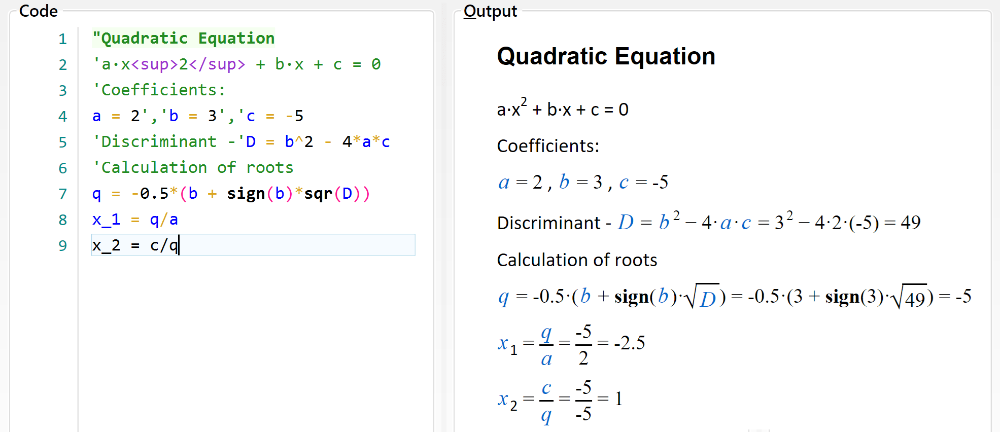
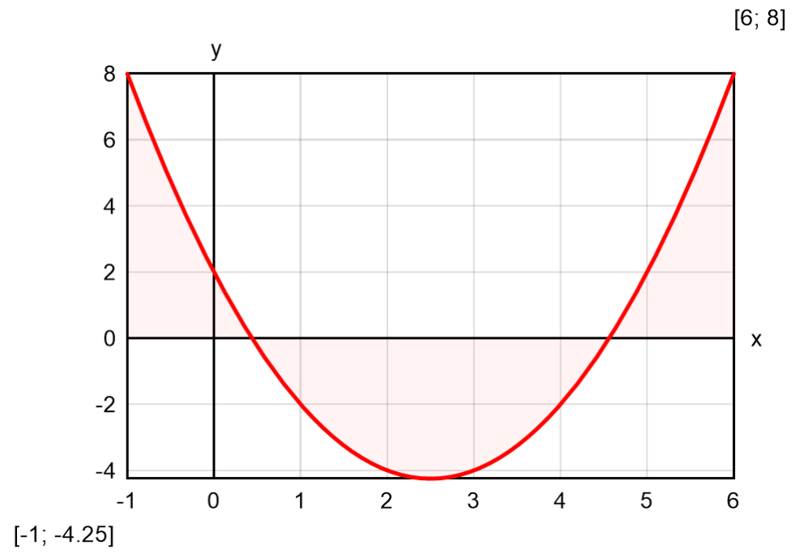
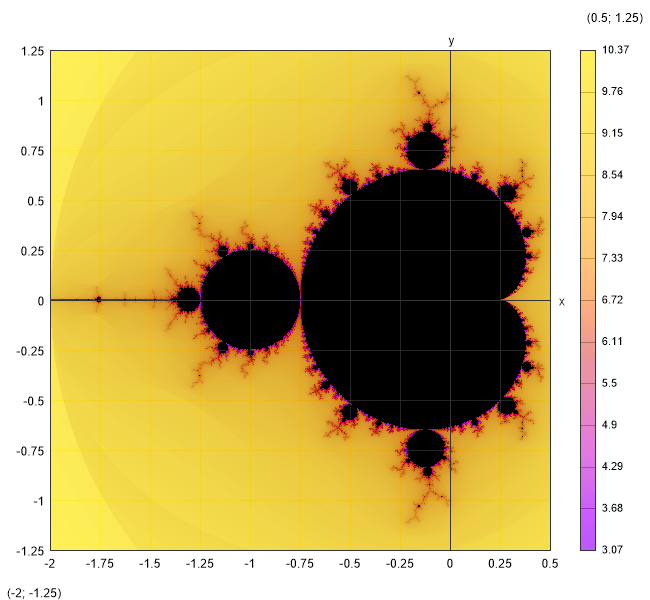
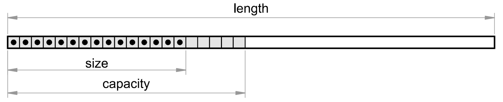
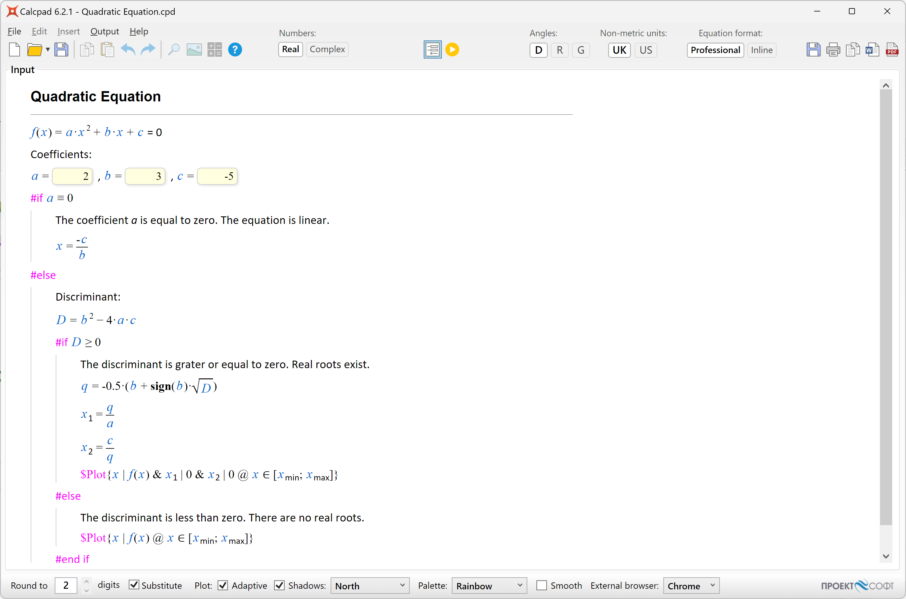
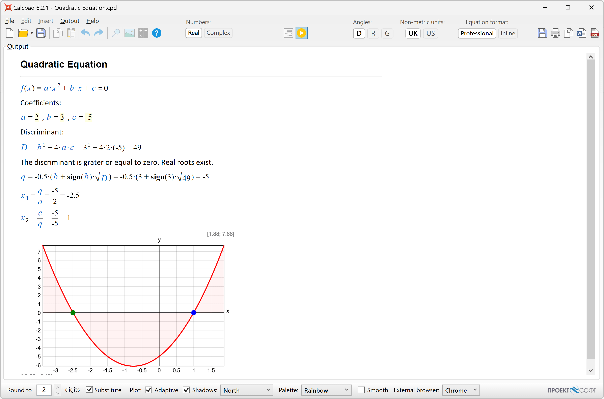

®
®- 保加利亚,索菲亚1164,34-36 Peyo Yavorov blvd
- +359 2 423 4455
- proektsoft.bg@gmail.com
Calcpad
7.1版自述文件
关于Calcpad
Calcpad是一款用于数学和工程计算的免费软件.它是一个灵活现代的可编程计算器,具有Html报告生成器.它简单易用,但也包含许多高级功能:
- 实数和复数;
- 度量单位(国际单位制、英制、美制和自定义单位制);
- 向量和矩阵:方阵,对称阵,列阵,对角阵,上/下三角阵;
- 自定义变量和单位;
- 内置常用数学函数库;
-
向量和矩阵函数:
- 数据函数: 搜素, 查找, 排序, 计数等.;
- 聚合函数: min, max, sum, sumsq(平方和), srss(平方和的平方根), average(均值), product(积), 几何平均等.;
- 数学函数: norm(范数), condition(条件数), determinant(行列式), rank(秩), trace(迹), transpose(转置), adjugate(伴随矩阵)及 cofactor(协因数矩阵), inverse(逆矩阵), 矩阵分解 (Cholesky, ldlt, lu, qr 和 svd), 特征值/特征向量和线性方程组;
- 多参数函数f(x; y; z; …);
- 强大的数值方法,用于求根和极值、数值积分和微分;
- 有限求和、乘积和迭代过程;
- 模块、宏和字符串变量;
- 带有条件和循环的程序流程控制;
- 引号内的“标题”和'文本'注释;
- 注释中支持Html和CSS进行丰富格式化;
- 函数绘图、图像、表格、参数化SVG绘图等;
- 自动生成用于数据输入的Html表单;
- 专业外观的Html报告,用于查看和打印;
- 导出为Word(*.docx)和PDF文档;
- 变量替换和智能舍入数字;
- 输出可见性控制和内容折叠;
- 支持纯文本(*.txt,*.cpd)和二进制(*.cpdz)文件格式.
该软件使用C#编程语言和最新的计算机技术开发.它会自动解析输入,替换变量,计算表达式并显示输出.所有结果都会发送到外观专业的Html报告中,供查看和打印.
应用领域
这个软件适用于需要执行重复计算并将其呈现在官方文档(如计算说明)中的工程师和其他专业人士.他们可以通过创建强大可靠的Calcpad工作表来高效地自动化这项任务.它还可以帮助教师准备计算示例、论文、手册、书籍等等.学生可以使用它来解决各种问题、准备家庭作业、学位论文等.
安装
安装由自动化安装程序calcpad-setup-en-x64.exe执行.按照安装向导的说明进行操作.该软件需要一台64位计算机,安装有Windows 10和Microsoft .NET 8.0.
许可和使用条款
这个软件对商业和非商业用途均免费.它是根据MIT许可证分发的:
版权所有 © 2021 PROEKTSOFT EOOD®
特此授予任何获得本软件及相关文档文件(“软件”)副本的人免费使用本软件的权限,包括但不限于使用、复制、修改、合并、发布、分发、再许可和/或销售本软件的副本,以及允许使用本软件的人这样做,但须遵守以下条件:
上述版权声明和本许可声明应包含在所有副本或实质部分的软件中.
本软件按“原样”提供,不附带任何形式的明示或暗示担保,包括但不限于适销性、特定用途适用性和非侵权性的担保.在任何情况下,作者或版权持有人均不对任何索赔、损害或其他责任承担责任,无论是在合同、侵权或其他方面,由于软件或使用或其他交易引起的或与之相关的软件而导致的,包括但不限于使用或其他交易的任何损失或利润损失.
源代码托管在GitHub上:
https://github.com/Proektsoftbg/Calcpad
或在我们的SourceForge仓库:
https://sourceforge.net/p/calyx/code/ci/master/tree/
Calcpad开发的任何脚本均为各自作者的财产.除了作者本身指定的限制外,可以无限制地使用.
致谢
该项目使用了一些额外的第三方组件、软件和设计.它们在各自作者提供的许可条件下免费重新分发.
1. 本项目使用icons8.com创建了新的漂亮图标.
2. 感谢wkhtmltopdf.org项目,赋予了该软件PDF导出功能.
3. 本项目使用indestructible type*开发的Jost*字体系列,根据SIL开源字体许可证进行了分发.方括号稍作修改以适应本应用程序的需求.
工作原理
该软件快速且易于使用.只需按照以下简单步骤操作:
- 在左边的"Code(代码)"窗口中输入 文本和表达式 "Code" .
- 按F5或点击 启动计算.结果将以专业排版的Html报告显示在右侧的"Output(输出)" 窗口中.
- 点击
 打印或
打印或 复制输出.
复制输出.
或将输出导出到Html , PDF
, PDF  或MS Word 文档中.
或MS Word 文档中.
该程序可以在两种不同的模式下使用:
- 计算器 - 源代码可在左侧框中进行编辑.计算完成后,结果将显示在右侧框中.该模式适用于简短且简单的问题,不涉及复杂的格式.
- 输入表单 - 源代码不可访问.相反,显示一个HTML输入表单.它包含了所有参数的输入字段,这些参数是计算所需的.其余内容被锁定不可编辑.这种模式更适用于需要丰富格式的复杂问题,并且经常使用.它清楚地显示了所需的输入参数,并保护源代码免受意外损坏.
在"输入表单"模式下,您需要填写输入数据并点击按钮.您可以非常简便地直接通过源代码创建这样一个表单.只需在需要输入值的地方放置"?{}"符号.然后将问题文本保存为"*.cpd"文件.您可以在本手册的后面找到有关表单的更多信息.
理论基础
(若觉无趣可直接跳过)
Calcpad是如何工作的？它内部包含一个复杂的数学解析器,它完成了大部分的工作.首先,源代码会被扫描,使用词法分析将字节序列转换成令牌列表.每个令牌都由数据和类型(目的、角色)表示.
然后解析器会检查所有令牌是否按照正确的顺序排列.我们需要知道表达式是否在数学上是正确的并且可以计算.否则,应该生成一个易于理解的错误消息.例如,"3 + a / 5" 是一个正确的表达式,而 "3 a + / 5"不是.为了实现这个目的,标准的数学表示法被表示为具有上下文无关文法的形式语言,并使用语法分析. .
算术表达式通常以中缀表示法编写.这意味着每个运算符位于相应的操作数之间(例如 "5*3 + 2").问题在于,与人类不同,计算机很难理解这种表示法.主要问题是运算符的优先级和括号的使用.例如,上述表达式得出的结果是"17",而 "5*(3 + 2)" 得出的结果是"25".因此,表达式会被转换为不同类型的表示法,称为"后缀"或逆波兰表示法(RPN).对计算机来说,读取这种表示法非常容易.例如,表达式 "5*(3 + 2)" 在RPN中写作 "5 3 2 + *".其主要优势是可以明确指定操作的顺序,而无需使用括号.
对于计算逆波兰表示法(RPN)的表达式,有一个简单而强大的算法.几乎所有的计算器都使用这种算法.然而,Calcpad还包括额外的功能,用于处理参数、函数、宏、条件执行、循环等.
这是一份简短说明.若对该话题感兴趣,可以从专门的书籍、文章或网站中找到更多信息.推荐维基百科:
https://en.wikipedia.org/wiki/Parsing
https://en.wikipedia.org/wiki/Lexical_analysis
https://en.wikipedia.org/wiki/Context-free_grammar
https://en.wikipedia.org/wiki/Shunting-yard_algorithm
https://en.wikipedia.org/wiki/Reverse_Polish_notation
编写代码
将代码输入到“代码”输入窗口中.空格和缩进会自动保持.您可以使用计算机键盘或下面的“数字键盘”.您可以从输入窗口或任何外部程序(例如Word)复制文本.输入窗口上方有一个工具栏,其中包含一些有用的编辑命令:复制、粘贴、撤消、重做和插入图像.
源代码在逻辑上分为多行,自动编号.每个表达式应该在单独的一行上.特殊情况下,可以在同一行上有多个表达式,但它们必须用注释分隔开.当您完成一行时,按下“Enter”开始新的一行.语法高亮会自动执行.不同的代码元素以不同的颜色显示,具体取决于其类型.例如,注释以绿色显示,错误以红色显示.所有注释必须用引号括起来.它们可以包含普通文本和Html.您可以使用Html添加图片、表格和格式化报告.
数字键盘
当您使用平板电脑或带有触摸屏的笔记本电脑时,数字键盘非常有用.按下按钮时,相应的符号将插入到光标所在的位置.数字键盘分为四个部分:“数字”、“运算符”、“函数”和“其他”."="键不像简单计算器那样计算答案.这是赋值运算符(例如,“a = 4”).如果您需要检查两个数字的相等性,请使用“≡”运算符(例如,“a ≡ b”表示:“a是否等于b？”)."e"、"π"和"g"键插入相应的内置常数e ≈ 2.7183、π ≈ 3.1416和g ≈ 9.8066.
如果您不需要数字键盘并想释放一些空间,可以使用 按钮隐藏它.再次点击可以显示数字键盘.
按钮隐藏它.再次点击可以显示数字键盘.
“C”按钮删除上一个符号,“AC”删除整行.如果您双击此按钮,将清除整个文本.如果您不小心这样做了,可以使用撤消  来恢复.
来恢复.
在文本中移动
在Calcpad中编写和编辑文本与任何其他Windows程序没有太大区别.如果您有一些经验,可以跳过这一部分,直接进入“表达式”.
您可以在文本的任意位置输入.插入符号的位置称为“文本光标”(闪烁的垂直线“|”).您可以通过单击鼠标或使用键盘上的箭头“← → ↑ ↓”来更改光标位置.箭头将使光标向左或向右移动一个符号,并向上或向下移动一行.如果按住“Ctrl”键并按箭头键,光标将移动一个完整的单词.按下“Home”和“End”键将分别将光标发送到当前行的开头或结尾.如果事先按住“Ctrl”键,您将转到整个文本的开头或结尾.
选择文本
大多数编辑命令要求您选择要应用命令的一些文本.所选择的文本通常显示为蓝色背景(根据您的系统设置可能会有所不同).您可以按照以下方式使用鼠标选择文本:在要选择的文本的起始位置按下左鼠标按钮.按住按钮并将鼠标移动到结束位置.然后释放按钮.或者,您可以在起始位置单击,按下Shift,然后在结束位置单击.您还可以使用计算机键盘.按住Shift并按箭头键或“Home”、“End”、“Page Up”、“Page Down”.
删除文本
您可以通过按下“Delete”(“Del”)或“Backspace”(“Bkspc”)键来删除单个符号.区别在于,“Delete”删除光标后的符号,“Backspace”删除光标前的符号.如果事先按住“Ctrl”键,您可以删除整个单词而不是单个符号.如果您需要删除文本的较大部分,可以选择它,然后按“Delete”或“Backspace”.
复制
如果文本的某个部分重复出现,您可以将其复制而不是再次输入.这需要两个步骤:"复制"和"粘贴".在第一步(复制)中,所选文本被发送到称为剪贴板的内存中.在第二步(粘贴)中,文本被插入到新位置.一旦复制,您可以将文本粘贴到多个位置.您可以通过按"Ctrl+C"或点击 按钮将所选文本复制到剪贴板中.
按钮将所选文本复制到剪贴板中.
粘贴
在从剪贴板中粘贴文本之前,您必须将光标定位到所需位置.然后按"Ctrl+V"或 按钮.您可以将文本从Calcpad复制并粘贴到其他程序中,反之亦然.例如,您可以从Word中获取一些公式,在Calcpad中计算它们,然后将结果返回到Word中.
按钮.您可以将文本从Calcpad复制并粘贴到其他程序中,反之亦然.例如,您可以从Word中获取一些公式,在Calcpad中计算它们,然后将结果返回到Word中.
撤销
此命令撤消上一个编辑命令的结果并恢复先前的状态.您可以撤消多达10个步骤.只需按"Ctrl+Z"或单击 按钮即可.
按钮即可.
重做
"重做"(Redo)与"撤销"(Undo)的方式相反.它恢复了被撤销的命令.重做必须紧随上一个撤销.如果您在此期间输入或编辑一些文本,您将失去重做的能力.点击 按钮进行重做.
按钮进行重做.
查找
如果需要,您可以在代码中搜索某个特定文本并将其替换为另一个文本.选择"编辑/查找"菜单,点击 按钮或按"Ctrl+F"键.将会出现"查找和替换"对话框.
按钮或按"Ctrl+F"键.将会出现"查找和替换"对话框.
输入要搜索的单词或短语,然后点击"查找下一个".程序从当前位置开始,在所选方向中查找第一次出现的搜索短语.如果找到了搜索短语,它会被突出显示,搜索就会停止.要查找下一个出现,再次点击"查找下一个".您还可以按"F3"键,即使在关闭对话框后也可以继续搜索.
如果需要替换搜索到的文本,点击"替换"选项卡并填写"替换为"框中的内容,然后点击"替换"按钮.程序将替换当前出现的文本,并自动移动到下一个.如果您想替换代码中的所有出现,只需点击相应的按钮即可.
有几个选项会影响搜索结果,如下所示:
- 搜索方向: "向上"、"向下"和"全部"."全部"和"向下"都是朝着文档的末尾搜索.不同之处在于,"全部"在到达文档末尾后会跳到开头重新开始搜索.
- 选择:它仅适用于"全部替换"命令.您需要先进行选择,然后显示"查找和替换"对话框.然后,如果选中"选择"选项,所有的替换都将仅在所选文本中进行.
- 大小写:如果选中,搜索将区分大小写.默认情况下,大小写被忽略.
- 全字匹配:如果选中,程序将仅搜索代表整个单词的序列.
编码辅助功能
语法高亮
语法高亮将不同的颜色应用于编程语言的不同组成部分:函数、变量、运算符等.它会在您每次编辑并离开当前行时自动运行.所有错误都将以红色突出显示.程序区分已定义和未定义的变量和函数.颜色调色板是预定义的,无法更改.目前,Calcpad不支持自定义样式和主题.
自动缩进
程序会自动维护代码中各行的缩进.所有在条件和循环块内的行都会相应地缩进.此外,您可以在每行开头添加空格.虽然间距也是自动处理的,但前导空格不受影响.
自动补全
当您开始输入时,程序会显示一个下拉列表,其中包含与您刚刚输入的内容匹配的建议.它包含关键字、测量单位、内置函数和所有在当前行上面定义的自定义变量和函数.列表在您输入时动态过滤和排序.列表中的当前建议会被突出显示.如果这就是您需要的,请按“Tab”将其插入到当前位置.单击列表以插入其他建议中的一些.或者,您可以按“向下箭头”浏览可用的建议,按“Enter”插入所选的建议.如果列表在当前行上方,请改为按“向上箭头”.
括号匹配
程序可以找到匹配的开放和关闭括号.如果将光标放置在其中一个括号旁边,两个括号都会突出显示.如果没有相应的括号,则不会突出显示任何内容.
希腊字母
您可以通过点击代码编辑器下方的相应符号来插入希腊字母.或者,您可以从下面的表格中输入相应的拉丁字母,然后按"Ctrl+G".如果再次按下该键,您将把字母从希腊转换回拉丁.由于"j"/"J"和"V"保持未使用状态,它们分别映射为"ø"/"Ø"和"∡".
| 名称 | 希腊字母 | 拉丁字母 | 希腊字母 | 拉丁字母 |
|---|---|---|---|---|
| alpha西格玛 | α | a | Α | A |
| beta贝塔 | β | b | Β | B |
| gamma伽马 | γ | g | Γ | G |
| delta德尔塔 | δ | d | Δ | D |
| epsilon伊普西隆 | ε | e | Ε | E |
| zeta泽塔 | ζ | z | Ζ | Z |
| eta伊塔 | η | h | Η | H |
| theta西塔 | θ | q | Θ | Q |
| theta-alt | ϑ | v | ∡ | V |
| iota | ι | i | Ι | I |
| kappa | κ | k | Κ | K |
| lambda拉姆达 | λ | l | Λ | L |
| mu缪 | μ | m | Μ | M |
| nu | ν | n | Ν | N |
| xi | ξ | x | Ξ | X |
| omicron | ο | o | Ο | O |
| pi | π | p | Π | P |
| rho | ρ | r | Ρ | R |
| sigma | σ | s | Σ | S |
| tau | τ | t | Τ | T |
| upsilon | υ | u | Υ | U |
| phi | φ | f | Φ | F |
| chi | χ | c | Χ | C |
| psi | ψ | y | Ψ | Y |
| omega欧米伽 | ω | w | Ω | W |
| phi-diam | ø | j | Ø | J |
使用Notepad++
Notepad++是一款流行的文本/代码编辑器.它是免费且开源的,可以从官方网站https://notepad-plus-plus.org下载.它支持许多编程或脚本语言.它的文本编辑功能比Calcpad更强大.它还非常适用于编写HTML代码.您也可以在Notepad++中使用Calcpad语法.它被预定义为一个XML文件,可以插入到Notepad++中.您可以通过选择"语言"菜单,然后点击"定义您的语言",然后"导入..."来实现.在您的Program Files目录或Calcpad安装目录中找到Calcpad文件夹,然后选择名为Calcpad-syntax-for-Notepad++.xml的文件.
表达式
Calcpad的主要目的是进行计算.因此,除非用引号括起来,否则输入窗口中的所有内容都被视为数学表达式.如果用引号括起来,则被视为注释.默认情况下,每个表达式必须在单独的一行中,例如:
2 + 35*(3+1)15/2
您不应在每个表达式的末尾添加"=".这是赋值运算符,用于将值赋给变量,例如"a = 2".点击按钮,在输出窗口中查看结果:
2 + 3 = 55∙(3 + 1) = 2015/2 = 7.5
或者,您可以在一行中有多个表达式,但它们必须用注释分隔,例如:
'长度 -'a = 3 m', 宽度 -'b = 2*a', 高度 -'c = 5 m
每个表达式可以包括常数(数字)、变量、运算符、函数和括号.它们必须正确排列以表示有效的表达式.使用通常接受的数学符号和运算符优先级,与学校教学的方式相同.下面详细描述了表达式组成部分.
您可以像使用简单计算器一样计算单独的不相关表达式,或编写一个完整的程序来解决特定的问题.您可以定义变量并给它们赋值.此外,您可以使用它们来定义其他变量,依此类推,直到达到最终结果.您还可以添加文本、HTML和图像以创建详细且专业的计算报告.您可以将其保存到文件中,并多次使用它来解决类似的问题.下面是一个解二次方程的示例程序:

常数
实数
实数常数可以是正负整数和小数.它们可以包括数字“0” - “9”和小数点“.”.您还可以将数字表示为分数,如“3/4”.但是,程序将将它们视为表达式(两个数字的除法).您不能以浮点格式定义数字:“3.4e+6”.您必须使用表达式“3.4*10^6”代替.
所有常数和变量在内部以“双精度浮点”数字的形式存储.它们的值范围从-1.7976931348623157E+308到1.7976931348623157E+308.如果结果超出上述区间,程序将分别返回“-∞”或“+∞”.除以零会得到相同的结果,但“0/0”=“未定义”.最小的正数是4.94065645841247E-324.更小的值将被精确地四舍五入为0.
复数
如果选择“复数”模式,您可以在计算中使用复数.否则,仅应用实数运算.每个复数由有序对(a;b)表示,其中“a”是实数,“b = |b|i”被称为“虚数”.它可以用所谓的代数形式表示:±a ± bi(例如“2 + 3i”).您还可以使用其他形式,如极坐标或指数形式,通过输入相应的表达式.在Calcpad中,虚数单位可以输入为“i”或“1i”(如果您有一个名为“i”的变量).虚数单位是满足表达式i 2 = -1的特殊数字.
变量
变量通过表达式“a = 4”来定义其名称和值.符号“=”是赋值运算符.左边只允许一个变量名.右边可以是任何有效的数学表达式,例如“b = a + 4”.变量的“生命周期”从其定义的位置到程序的结束.因此,在定义之前不能使用变量.这将引发错误.如果您用新值重新定义现有变量,它将替换旧变量,并且新值将继续使用.
变量名称可以包含小写或大写的拉丁字母“a”-“z”,“A”-“Z”,希腊字母“α”-“ω”,“Α”-“Ω”和数字.名称区分大小写.例如,“a”和“A”是不同的变量.名称必须以字母或∡开头.您还可以使用“,”(逗号)、“‾”(上划线)、“_”(下划线)、上标:“ ⁰ ”-“ ⁹ ”、“ ⁿ ”、“ ⁺ ”、“ ⁻ ”和其他符号:“ ′ ”、“ ″ ”、“ ‴ ”、“ ⁗ ”、“ ø ”、“Ø”、“ ° ”、“∡”.名称中下划线的第一次出现会开始一个下标.例如,“a_1_1”将显示为“a1_1”.变量可以存储实数或复数(在“复数”模式下).
运算符
Calcpad语言支持下列运算:
-
算术:
- "!" - 级数;
- "^" - 指数;
- "/" - 浮点除法;
- "\" - 整除;
- "÷" - division bar;
- "⦼" - 求模 (%%, 求余);
- "*" - 乘法;
- "-" - 减法;
- "+" - 加法;
-
关系(比较):
- "≡" - 等于(==);
- "≠" - 不等于(!=);
- "<" - 小于(<);
- ">" - 大于(>);
- "≤" - 小于等于(<=);
- "≥" - 大于等于(>=);
-
逻辑值:
- "∧" - 逻辑值 "且";
- "∨" - 逻辑值 "或";
- "⊕" - 逻辑值 “异或”;
- "=" - 赋值.
运算符快捷方式
您可以使用相应的C风格等效运算符来替代"≡"、"≠"、"≤"和"≥",如下所示:"=="、"!="、"<="和">=".它们将自动替换为相应的Calcpad运算符.快捷方式“%%”将转换为模运算符“⦼”.这是必要的,因为“%”被保留用于百分比单位.由于这个符号不太常见,它在输出中被呈现为“mod”,例如“7 mod 5 = 2”,而不是“7 ⦼ 5 = 2”.
运算符优先级和结合性
上述运算符按照它们的优先级顺序列出.这是它们在表达式中将被评估的顺序.当在一个表达式中有不同类型的运算符时,指数运算先进行评估,然后是除法和乘法,减法和加法,最后是比较运算.当我们有一个一元负号和指数运算时,指数运算先进行评估.例如:“-2^2 = -(2^2) = -4” 所有关系运算符的优先级相同.如果您需要改变评估的顺序,可以使用括号.例如,“5 + 2∙3”得到“11”.如果要先进行加法,写成“(5 + 2)∙3”.您将得到“7∙3 = 21”.优先级相同的运算符从左到右进行评估.这被称为运算符的结合性.例如,“3 - 2 + 1”得到“(3 - 2) + 1 = 2”而不是“3 - (2 + 1) = 0”.另一个很好的例子是“2∙3 / 2∙3”,得到“9”而不是“1”.
在Calcpad中,所有运算符都是左结合的(计算从左到右进行).唯一的例外是指数运算,它是右结合的.它是从右到左进行计算的,这意味着x^a^b将被评估为xab.然而,许多手持计算器和电子表格软件(如Excel)使用左结合性进行指数运算.在这种情况下,x^a^b将被评估为xa·b.如果您需要得到xab,您将需要添加括号:x^(a^b).
关系表达式
关系运算符只能返回两个值:“1”表示“true”,“0”表示“false”.您可以与算术运算符一起在表达式中使用它们.例如,您可以通过表达式“a*(a ≥ b) + b*(a < b)”获得两个数a和b中的较大值.但是您需要小心.如果您使用“≤”而不是“<”,对于a等于b的情况,您将得到a + b,这可能不是您想要的结果.为了这个特殊目的,最好使用内置函数max(a; b)、逻辑运算符或条件执行(请查看本手册后面的内容).算术运算符的优先级高于关系运算符,两者在逻辑运算符之前进行评估.
逻辑表达式
Calcpad仅处理数值数据,并没有专门的布尔数据类型.与关系运算符类似,逻辑运算符也使用"1"表示"true(真)",使用"0"表示"false(假)".任何非0的输入值也被视为"true".您可以通过使用逻辑运算符和/或逻辑函数(请参阅本手册后面的内容)来构建逻辑表达式.它们的工作原理如下:
- "∧"(and)如果两个操作数都为1,则返回1,否则返回0;
- "∨"(or)如果任何一个操作数为1,则返回1,如果两个操作数都为0,则返回0;
- "⊕"(xor)如果只有一个操作数为1,则返回1,否则返回0.
上述运算符的结果如下表所示:
|
且
|
或
|
异或
|
复数代数
除了阶乘"!"、整数除法"\"、求余"⦼"和比较运算符"<"、"≤"、">"、"≥"之外,所有运算符都支持复数.复杂表达式的求值比实数稍微复杂一些.基本复数运算的规则如下:
- 加法:
(a + bi) + (c + di) = (a + c) + (b + d)i; - 减法:
(a + bi) − (c + di) = (a − c) + (b − d)i; - 乘法:
(a + bi)·(c + di) = (ac − bd) + (bc + ad)i; - 除法:
(a + bi)/(c + di) = (ac + bd)/(c2 + d2) + (bc − ad)/(c2 + d2)i;
括号
括号有两种用途:改变计算顺序和括住函数参数.只允许使用圆括号:" (" 和 ")".软件会检查每个表达式是否满足以下规则:
- 表达式中的第一个括号必须是左括号;
- 左括号和右括号的数量必须相等;
- 左括号之前只允许使用运算符或函数标识符;
- 在运算符或函数标识符之后不允许使用右括号;
- 函数标识符后必须始终跟随左括号.
在渲染输出时,Calcpad使用"智能"括号插入.这意味着重复或不影响计算顺序的括号将从输出中省略.另一方面,在输入中不需要的情况下,会添加括号以增加清晰度.这通常发生在替换负数或复数变量时.例如:
- 如果a = -2,则a2 = (-2)2 = 4,而不是a2 = -22.第二种情况是不明确的,符号可以应用于指数运算,结果为-4.此外,对复数变量的指数运算添加了括号;
- 如果a = -2,则b = -a = -(-2) = 2,而不是b = -a = --2 = 2;
- 在乘法和除法中,对负变量添加括号:a·b = -2·(-3) = 6;
- 几乎每次我们需要替换复数变量时都需要添加括号:a·b = (2 + 3i)·(3 - 2i) = 12 + 5i.
函数
库(内置)函数
Calcpad包含一个常用数学函数库,可以直接使用:
-
三角函数:
sin(x)- 正弦;cos(x)- 余弦;tan(x)- 正切 =sin(x)/cos(x), for each x ≠ kπ, k=1, 2, 3…;csc(x)- 余割 =1/sin(x), for each x ≠ kπ, k=1, 2, 3…;sec(x)- 正割 =1/cos(x), for each x ≠ π/2 + kπ, k=1, 2, 3…;cot(x)- 余切 =cos(x)/sin(x), for each x ≠ π/2 + kπ, k=1, 2, 3…;
-
双曲三角函数:
sinh(x)- 双曲正弦 =(ex - e-x)/2;cosh(x)- 双曲余弦 =(ex + e-x)/2;tanh(x)- 双曲正切 =(ex - e-x)/(ex + e-x);csch(x)- 双曲余割 =1/sinh(x);sech(x)- 双曲正割 =1/cosh(x);coth(x)- 双曲余切 =(ex + e-x)/(ex - e-x), for x ≠ 0;
-
反三角函数:
asin(x)- 反正弦, 定义域: -1 ≤ x ≤ 1;acos(x)- 反余弦, 定义域: -1 ≤ x ≤ 1;atan(x)- 反正切;atan2(x; y)- 正切值为y/x的角度;acsc(x)- 反余割 =asin(1/x);asec(x)- 反正割 =acos(1/x);acot(x)- 反余切;
-
反双曲函数:
asinh (x)- 反双曲正弦 =ln(x + √x2 + 1), 定义域: -∞ ≤ x ≤ +∞;acosh(x)- 反双曲余弦 =ln(x + √x + 1·√x - 1), 定义域: x ≥ 1;atanh(x)- 反双曲正切 =1/2·ln[(1 + x)/(1 - x)], for -1 < x < 1;acsch(x)- 反双曲余切 =atanh(1/x);asech(x)- 反双曲正割 =acosh(1/x);acoth(x)- 反双曲余切 =1/2·ln[(x + 1)/(x - 1)], for |x| > 1;
-
对数, 指数 和 根:
log(x)- 十进制对数(底数为10), 定义域: x > 0;ln(x)- 自然对数(底数e ≈ 2.7183), 定义域: x > 0;log_2(x)- 二进制对数 (底数为2), 定义域: x > 0;exp(x)- 自然指数函数 = e ˣ;sqr(x)或sqrt(x)- 平方根 (√x ), 定义域: 定义域: x ≥ 0;cbrt(x)- 立方根 ( 3√x );root(x; n)- n次方根 ( n√x );
-
舍入:
round(x)- 舍入到最接近的整数;floor(x)- 舍入到稍小的整数(向 -∞方向舍入);ceiling(x)- 舍入到稍大的整数(向 +∞方向舍入);trunc(x)- 舍入到稍小的整数(向0的方向舍入);
-
整数相关:
mod(x; y)- 整除的余数;gcd(x; y)- 最大公约数;lcm(x; y)- 最小公倍数;
-
复数:
abs(x)- 实数的绝对值(模)| x |;abs(a + bi)- 复数模 = sqrt(a2 + b2);re(a + bi)- 仅返回复数的实部, re(a + bi) = a;im(a + bi)- 返回复数的虚部的数值(实数), im(a + bi) = b;phase(a + bi)- 复数的阶(辐角) = atan2(a; b).
-
聚合和内插:
min(x; y; z…)- 最小值;max(x; y; z…)- 最大值;sum(x; y; z…)- 求和= x + y + z…;sumsq(x; y; z…)- 平方和= x² + y² + z²…;srss(x; y; z…)- 平方和的平方根= sqrt(x² + y² + z²…);average(x; y; z…)- 平均值= (x + y + z…)/n;product(x; y; z…)- 累积= x·y·z…;mean(x; y; z…)- 几何平均= (x·y·z…)的n次方根;take(n; a; b; c…)- 返回列表中的第n个元素;line(x; a; b; c…)- 以x为参数在特定值中执行线性插值>;spline(x; a; b; c…)- 执行Hermite多线性插值;
-
条件和逻辑:
if(<条件>; <条件为真的返回值>; <条件为假的返回值>)- 如果条件满足,则函数返回第一个值,否则返回第二个值.当条件计算结果为非零数时,条件被满足;switch(<条件1>; <值1>; <条件2>; <值2>;…; <默认值>)- 返回满足相应条件的值.条件从左到右进行检查.如果没有条件被满足,则最后返回默认值;not(x)- 逻辑值 "否";and(A; ⃗b; c…)- 逻辑值 "且";or(A; ⃗b; c…)- 逻辑值 "或";xor(A; ⃗b; c…)- 逻辑值 "异或";
-
其他:
sign(x)- 符号函数 = -1, if x < 0; 1, if x > 0, 0 if x = 0;random(x)- 生成0 和 x之间的随机数.
-
向量:
-
创建相关:
vector(n)- 创建长度为 n的空向量;fill(⃗v; x)- 以x的值填充向量⃗v;range(x1; xn; s)- 创建一个向量其元素值从 x1 到 xn 以步 s变化;
-
结构相关:
len(⃗v)- 返回向量 ⃗v的长度(维数);size(⃗v)- 向量的实际大小 ⃗v (最后一个非0元素的索引号);resize(⃗v; n)- 设置 n 为向量 ⃗v新的长度值;join(A; ⃗b; c…)- 通过合并:矩阵,向量和标量创建一个向量;slice(⃗v; i1; i2)- 返回向量的 ⃗v 索引号 i1 到 i2 (包含边界)的部分;first(⃗v; n)- 向量 ⃗v的前 n个元素;last(⃗v; n)- 向量 ⃗v的后 n个元素;extract(⃗v; ⃗i)- 从向量 ⃗v 中提取元素,元素的索引号包含在向量 ⃗i中;
-
数据相关:
sort(⃗v)- 对向量 ⃗v 的元素按升↑序排列;rsort(⃗v)- 对向量 ⃗v 的元素按降↓序排列;order(⃗v)- 向量 ⃗v的索引号, 以元素的升序排列;revorder(⃗v)- 向量 ⃗v的索引号, 以元素的降序排列;reverse(⃗v)- 一个新向量包含 ⃗v 的元素,但逆序排列;count(⃗v; x; i)- 向量 ⃗v中, 第i个元素后= x的元素个数;search(⃗v; x; i)- 向量 ⃗v中, 第i个元素后= x的第一个元素的索引号;find(⃗v; x; i)或find_eq(⃗v; x; i)- 向量 ⃗v中, 第i个元素后= x的所有元素的索引号;find_ne(⃗v; x; i)- 向量 ⃗v中, 第i个元素后≠ x的所有元素的索引号;find_lt(⃗v; x; i)- 向量 ⃗v中, 第i个元素后 < x的所有元素的索引号;find_le(⃗v; x; i)- 向量 ⃗v中, 第i个元素后 ≤ x的所有元素的索引号;find_gt(⃗v; x; i)- 向量 ⃗v中, 第i个元素后 > x的所有元素的索引号;find_ge(⃗v; x; i)- 向量 ⃗v中, 第i个元素后 ≥ x的所有元素的索引号;lookup(⃗a; ⃗b; x)或lookup_eq(⃗a; ⃗b; x)- 向量 ⃗a 中所有 = x的元素的索引号在⃗b中对应的所有元素(顺序组成新向量);lookup_ne(⃗a; ⃗b; x)- 向量 ⃗a 中所有 ≠ x的元素的索引号在⃗b中对应的所有元素(顺序组成新向量);lookup_lt(⃗a; ⃗b; x)- 向量 ⃗a 中所有 < x的元素的索引号在⃗b中对应的所有元素(顺序组成新向量);lookup_le(⃗a; ⃗b; x)- 向量 ⃗a 中所有 ≤ x的元素的索引号在⃗b中对应的所有元素(顺序组成新向量);lookup_gt(⃗a; ⃗b; x)- 向量 ⃗a 中所有 > x的元素的索引号在⃗b中对应的所有元素(顺序组成新向量);lookup_ge(⃗a; ⃗b; x)- 向量 ⃗a 中所有 ≥ x的元素的索引号在⃗b中对应的所有元素(顺序组成新向量);
-
数学相关:
norm_1(⃗v)- 向量 ⃗v的L1 (Manhattan)范数;norm(⃗v)或norm_2(⃗v)或norm_e(⃗v)- 向量 ⃗v的L2 (Euclidean)范数;norm_p(⃗v; p)- 向量⃗v的Lp 范数;norm_i(⃗v)- 向量 ⃗v的L∞ (无穷)范数;unit(⃗v)- 向量 ⃗v的规范化 (L2 范数 = 1);dot(⃗a; ⃗b)- 2个向量 ⃗a 和 ⃗b的标量积;cross(⃗a; ⃗b)- -2个向量(长度2或3) ⃗a 和 ⃗b 的叉积;
-
创建相关:
-
矩阵:
-
创建相关:
matrix(m; n)- 创建一个 m⨯n的空矩阵;identity(n)- 创建一个 n⨯n的单位矩阵;diagonal(n; d)- 创建一个n⨯n 对角元素值为 d的对角矩阵;column(m; c)- 创建一个 m⨯1的列矩阵, 元素值都为 c;utriang(n)- 创建一个 n⨯n的上三角矩阵;ltriang(n)- 创建一个 n⨯n的下三角矩阵;symmetric(n)- 创建一个 n⨯n的对称矩阵;vec2diag(⃗v)- 用向量 ⃗v的元素创建一个对角矩阵;vec2row(⃗v)- 用向量 ⃗v创建包含元素的行矩阵;vec2col(⃗v)- 用向量 ⃗v的元素创建一个列矩阵;join_cols(⃗c1; ⃗c2; ⃗c3…)- 通过合并列向量创建新矩阵;join_rows(⃗r1; ⃗r2; ⃗r3…)- 通过合并行向量创建新矩阵;augment(A; ⃗b; c…)- 通过对矩阵A; B; C 左右相接扩充创建新矩阵;stack(A; ⃗b; c…)- 通过对矩阵 A; B; C 上下相接创建新矩阵;
-
结构相关:
n_rows(M)- 矩阵 M的行数;n_cols(M)- 矩阵M的列数;mresize(M; m; n)- 对矩阵 M设置新的维数 m 和 n ;mfill(M; x)- 以 x值填充矩阵 M ;fill_row(M; i; x)- 以 x填充矩阵 M的第 i 行;fill_col(M; j; x)- 以 x填充矩阵 M的第 j 列;copy(A; B; i; j)- 将 A 的所有元素复制到 B, B的索引起始号为行: i ;列: j;add(A; B; i; j)- 将 A 的所有元素加到 B, B的索引起始号为行: i ;列: j;row(M; i)- 提取矩阵M第 i行为一个向量;col(M; j)- 提取矩阵M第 j列为一个向量;extract_rows(M; ⃗i)- 从矩阵M 中提取行,行号包含在向量⃗i中;extract_cols(M; ⃗j)- 从矩阵M 中提取列,行号包含在向量⃗j中;diag2vec(M)- 将矩阵 M的对角元素提取到一个向量中;submatrix(M; i1; i2; j1; j2)- 在矩阵 M中提取一个次矩阵, 行号 i1 到 i2 列号 j1 到 j2, 上下界限包含在内;
-
数据相关:
sort_cols(M; i)- 以第 i 行的值为准对矩阵M的列按照升序排列;rsort_cols(M; i)- 以第 i 行的值为准对矩阵M的列按照降序排列;sort_rows(M; j)- 以第 j 列的值为准对矩阵M的行按照升序排列;rsort_rows(M; j)- 以第 j 列的值为准对矩阵M的行按照降序排列;order_cols(M; i)- 以矩阵 M第 i 行的值按照升序排列,对应的的列号排序;revorder_cols(M; i)- 以矩阵 M第 i 行的值按照降序排列,对应的的列号排序;order_rows(M; j)- 以矩阵 M第 j 列的值按照升序排列,对应的的行号排序;revorder_rows(M; j)- 以矩阵 M第 j 列的值按照降序排列,对应的的行号排序;mcount(M; x)- 矩阵 M出现 x值的次数 ;-
msearch(M; x; i; j)- 以在矩阵 M中第一次出现x的行号 i 和列号 j组成的向量; mfind(M; x)或mfind_eq(M; x)- 矩阵 M 中所有 = x的元素的索引号;mfind_ne(M; x)- 矩阵 M 中所有 ≠ x的元素的索引号;mfind_lt(M; x)- 矩阵 M 中所有 < x的元素的索引号;mfind_le(M; x)- 矩阵 M 中所有 ≤ x的元素的索引号;mfind_gt(M; x)- 矩阵 M 中所有 > x的元素的索引号;mfind_ge(M; x)- 矩阵 M 中所有 ≥ x的元素的索引号;hlookup(M; x; i1; i2)或hlookup_eq(M; x; i1; i2)- 矩阵M第i1行元素 = x时,该列对应的第i2行的元素值(组成的向量);hlookup_ne(M; x; i1; i2)- 矩阵M第i1行元素 ≠ x时,该列对应的第i2行的元素值(组成的向量);hlookup_lt(M; x; i1; i2)- 矩阵M第i1行元素 < x时,该列对应的第i2行的元素值(组成的向量);hlookup_le(M; x; i1; i2)- 矩阵M第i1行元素 ≤ x时,该元素所在列的第i2行的元素值(组成的向量);hlookup_gt(M; x; i1; i2)- 矩阵M第i1行元素 > x时,该元素所在列的第i2行的元素值(组成的向量);hlookup_ge(M; x; i1; i2)- 矩阵M第i1行元素 ≥ x时,该元素所在列的第i2行的元素值(组成的向量);vlookup(M; x; j1; j2)或vlookup_eq(M; x; j1; j2)- 矩阵M第j1列元素 =x时,该元素所在行的第j2列的元素值(组成的向量);vlookup_ne(M; x; j1; j2)- 矩阵M第j1列元素 ≠x时,该元素所在行的第j2列的元素值(组成的向量);vlookup_lt(M; x; j1; j2)- 矩阵M第j1列元素 <x时,该元素所在行的第j2列的元素值(组成的向量);vlookup_le(M; x; j1; j2)- 矩阵M第j1列元素 ≤x时,该元素所在行的第j2列的元素值(组成的向量);vlookup_gt(M; x; j1; j2)- 矩阵M第j1列元素 >x时,该元素所在行的第j2列的元素值(组成的向量);vlookup_ge(M; x; j1; j2)- 矩阵M第j1列元素 ≥x时,该元素所在行的第j2列的元素值(组成的向量);
-
数学相关:
hprod(A; B)- 矩阵 A和B的Hadamard积;fprod(A; B)- 矩阵 A 和 B的Frobenius积;kprod(A; B)- 矩阵 A 和 B的Kronecker积;mnorm_1(M)- 矩阵 M的L1范数;mnorm(M)或
mnorm_2(M)- 矩阵 M的L2范数;mnorm_e(M)- 矩阵 M的Frobenius范数;mnorm_i(M)- 矩阵 M的L∞范数;cond_1(M)- 矩阵 M 基于L1范数的条件数;cond(M)或cond_2(M)- 矩阵 M 基于 L2范数的条件数;cond_e(M)- 矩阵 M 基于 Frobenius范数的条件数;cond_i(M)- 矩阵 M 基于 L∞ 范数的条件数;det(M)- 矩阵 M的行列式;rank(M)- 矩阵 M的秩;trace(M)- 矩阵 M的迹;transp(M)- 矩阵 M的转置矩阵;adj(M)- 矩阵 M的伴随矩阵(adjugate matrix);cofactor(M)- 矩阵 M的协因数/共因子矩阵(cofactor matrix);eigenvals(M)- 矩阵 M的特征值(eigenvalues);eigenvecs(M)- 矩阵 M的特征向量(eigenvectors);eigen(M)- 矩阵M的特征值及特征向量;cholesky(M)- 对称且正-定矩阵M的Cholesky分解;lu(M)- 矩阵 M的LU分解;qr(M)- 矩阵 M的QR分解;svd(M)- 矩阵M的奇异值分解(SVD);inverse(M)- 矩阵 M的逆矩阵;lsolve(A; b)- 求解线性方程组 A ⃗x = ⃗b:对对称矩阵使用 LDLT 分解,对非对称矩阵使用 LU分解;clsolve(A; b)- 求解线性矩阵方程 A⃗x = ⃗b :对对称且正-定系数矩阵A 使用Cholesky 分解;msolve(A; B)- 求解一般矩阵方程 AX = B :对对称矩阵使用 LDLT 分解;对非对称矩阵使用LU分解;-
cmsolve(A; B)- 求解一般矩阵方程 AX = B :对对称且正-定系数矩阵A 使用Cholesky分解;
-
创建相关:
-
双重插值:
take(x; y; M)- 返回矩阵 M 行号 x 列号 y的元素;line(x; y; M)- 基于 x 和 y值对M中元素的双重线性插值;spline(x; y; M)- 基于 x 和 y值对M中元素的双重Hermite样条曲线插值.
参数必须用圆括号括起来.它们可以是常数、变量或任何有效的表达式.多个参数必须用分号 ";" 分隔.当参数超出范围时,函数返回 "未定义".不适用此规则的例外是 "cot(0)" 和 "coth(0)",它们返回 "+∞".
三角函数的参数可以是 度、弧度 或 梯度.角度单位可以以三种不同的方式指定:
1. 通过输出窗口上方的单选按钮 (🔘D、🔘R、🔘G).
2. 通过代码内的编译器开关.您必须插入一行单独的代码,其中包含:#deg 表示度,#rad 表示弧度或 #gra 表示梯度.这将影响当前行后的所有表达式,直到找到另一个指令为止.
3. 通过将原生单位附加到值本身:deg、°、′、″、rad、grad、rev(请参见本手册中的“单位”部分).
原生单位具有最高优先级,其次是源代码中的编译器开关.两者都会覆盖单选按钮设置,后者为最低优先级.
所有函数也在复数域中定义,除了mod(x; y)、gcd(x; y)、lcm(x; y)、min(x; y) 和 max(x; y).
逻辑函数接受数值并返回“0”表示“false”,返回“1”表示“true”.两个参数(一个为“not”)的结果如下表所示:
|
|
|
|
任何与0不同的数值都被视为1(真).多个参数按照上述表格从左到右顺序进行评估.我们从第一个和第二个开始.然后,依次评估获得的结果和下一个值,以此类推.
使用round()函数对中点值进行四舍五入,结果为离0最近的整数.floor()函数向较小的值(向-∞)进行舍入.ceiling()函数向较大的值(向+∞)进行舍入.与floor()不同,trunc()函数向0进行舍入,相当于简单地截断小数部分.下表提供了一些负数和正数舍入的示例:
|
正数
|
负数
|
舍入复数会影响实部和虚部.
自定义函数
您可以定义自己的函数,并在计算中进一步使用它们.自定义函数可以有无限数量的参数.它们在函数名后面指定,用括号“(”…“)”括起来,并用分号“;”分隔.每个函数的定义格式如下:“f(x;y;z;…)= expression(表达式)”,其中“f”是函数名,“x”、“y”和“z”是函数参数.在右侧,您可以有任何有效的表达式,包括常数、运算符、变量甚至其他函数,例如:
f(x) = x^2 + 2*x*sin(x)g(x; y) = f(x)/(y - 4)
定义后,您可以在任何表达式中使用函数,只需写出函数名,然后在括号中指定参数,例如 b = g(a + 2;3) + 3.函数名必须符合变量名的规则.参数可以是任何有效的表达式.您必须提供与函数参数数量相同的参数.函数的生命周期从定义的位置到代码的结尾.如果您定义了一个同名的新函数,旧函数将被替换.您不能重新定义库函数.例如,sin(x)= x^2 将返回错误.
不需要预先定义用于参数的变量.但是,如果在函数体内使用其他变量,则必须在第一次调用函数之前定义它们.参数在函数体内起到局部变量的作用.如果函数外存在同名变量,对该函数的调用不会重写全局变量的值.例如:
- 若变量 "x = 4"
- 且函数"f(x) = x2".
- 当调用 "f(2)", 将得到 x2 = 22 = 4, 因为局部变量 x = 2
- 如果在这之后调用 "x2" , 将得到 x2 = 42 = 16, 因为全局变量 x 仍为4.
自定义函数支持实数和复数.
绘图
除了函数外,Calcpad还提供了用于高级操作的特殊命令.它们接受函数和表达式作为参数,并执行绘图、迭代解和数值方法.它们的名称以"$"开头,以与普通函数区分.它们的参数必须用花括号"{"和"}"括起来.其中一个是绘图命令$Plot.它可以在指定的区间内绘制一个变量的函数.它的格式如下:
$Plot{y(x) @ x = a : b}
, 其中:
- y(x) - 要绘制的函数.可以使用任何有效的表达式代替y(x),它将用于计算纵坐标的值;
- x - 横坐标上的变量名.您只能在此处放置一个变量名.不需要预先定义该变量;
- a和b是x变量的区间限制.您可以在a和b处放置数字、变量或任何有效的表达式.
例如,如果您输入:$Plot{x^2 - 5*x + 3 @ x = -1:6},您将得到以下结果:

上述命令一次只能绘制一个变量的一个函数.还有其他格式可以使用:
$Plot{x(t)|y(t) @ t = a : b} - 参数化函数绘图:坐标都是参数的函数;
$Plot{y1(x) & y2(x) & … @ x = a : b} - 单图多函数:在一个图上绘制多个函数;
$Plot{x1(t)|y1(t) & x2(t)|y2(t) & … @ t = a : b} - 多个参数绘图;
$Map{f(x; y) @ x = a : b & y = c : d} - 绘制由f(x; y)定义的3D表面的2D颜色图.
$Plot{...}函数必须在一行中最先出现.在它之前只能有空格和制表符,甚至不能有注释.否则,程序将返回错误.在闭括号"}"之后的任何文本都将被忽略.绘图仅支持实数.只有在绘图区间上,x和y都是实数并且函数返回实数结果时,才能在复数模式下使用.
您可以通过定义两个变量:PlotWidth和PlotHeight(以像素为单位)来指定绘图区域的大小.默认值为PlotWidth = 400和PlotHeight = 250.
$Map{...}函数可以使用不同的调色板.从程序窗口底部的"调色板(Palette)"组合框中选择首选项.如果选择了"平滑(Smooth)"复选框,刻度将显示为平滑渐变.否则,程序将绘制彩色条.您还可以通过选择相应的组合框来为图形添加3D效果.
以下是不同绘图方法的示例:
|
参数化绘图 方程: r(θ) = cos(5/2*θ)$Plot{r(θ)*cos(θ)|r(θ)*sin(θ) @ θ = 0:6*π}
|
多变量函数绘图 方程: y1(θ) = cos(θ) - sin(θ)y2(θ) = cos(θ) + sin(θ)$Plot{cos(θ) & y1(θ) & y2(θ) @ θ = 0:π}
|
结果: "玫瑰" 曲线
|
结果: 3个三角函数构成的树叶形
|
|
多参数化 方程: x(θ) = sqr(θ)*cos(θ)y(θ) = sqr(θ)*sin(θ)$Plot{x(θ)|y(θ) & -x(θ)|-y(θ) @ θ = 0:3*π}
|
彩色映射图 方程: f(x; y) = cos(x/3) + sin(y) - sin(x)*cos(y/4)$Map{f(x; y) @ x = -15 : 15 & y = -15 : 15}
|
结果:双Fermat螺旋线
|
结果: 2D波浪图
|
数值方法
Calcpad内置了一个"Solver(求解器)"模块,可以使用数值方法解决更复杂的问题.它只能处理实数,而不能处理复数.该模块包括以下函数:
求根
$Root{f(x) = const @ x = a : b}
$Root{f(x) @ x = a : b}
它在区间[a, b]内找到方程"f(x) = const"的一个根.如果"const"为零,您可以省略"= const".程序使用混合括号法,它是二分法和Anderson-Bjork方法的组合.它随后缩小根周围的区间,直到小于指定的精度.要求函数"f(x) - const"在区间的两端具有相反的符号.根据波尔查诺定理,如果函数在区间内是连续的,至少存在一个根.括号法算法将在有限次迭代后找到一个近似值.

使用此方法,您只能找到函数与"y = const"相交的根.当"f(x) - const"完全为正或负,并且只从一侧"触碰"该线时,您无法通过任何括号法找到根.
如果初始区间内不存在根,则程序返回错误.如果有多个根,它只会找到其中的一个.在这种情况下,最好先绘制函数.然后,您可以看到根的大致位置,并将区间分成几个部分 - 每个根一个区间.最后,您可以多次调用函数来找到所有的根.在某些情况下,可以开发自动分割区间的程序.
最小值
$Inf{f(x) @ x = a : b}
它在指定区间[a, b]内找到函数f(x)的最小值.为此,应用黄金分割搜索方法.如果函数在区间内包含局部最小值,则将其作为结果返回.否则,函数将返回区间两端值中较小的一个:f(a)或f(b).如果存在多个局部最小值,则程序将仅返回其中一个,但不一定是最小的.在这种情况下,最好将区间分割.找到最小值的x值存储在变量xinf中.如果您使用不同的参数名称,而不是x,它将在该名称末尾添加"_inf".
最大值
$Sup{f(x) @ x = a : b}
它的工作方式类似于查找最小值的函数,但它找到的是最大值.存储最大值所在的x值的变量名为xsup.
数值积分
$Area{f(x) @ x = a : b}
它计算指定区间[a, b]内函数f(x)的定积分值.为此,应用自适应高斯-洛巴托积分与Kronrod扩展 (Gander & Gautschi, 2000).
$Integral{f(x) @ x = a : b}
这个命令与上面的命令类似,但它使用了Tanh-Sinh积分(Takahasi＆Mori,1974),后来由Michashki＆Mosig(2016)和Van Engelen(2022)进行了进一步的改进.在Calcpad中进行了进一步的改进,通过预计算和缓存横坐标和权重,这个算法在连续和光滑函数的情况下显著优于$Area.但是,如果函数不满足这些要求,则不应使用$Integral方法.这时,你有两个选项:
- 通过使用不连续点将区间[a,b]分成较小的部分,对每个部分分别应用该方法,并将结果相加;
- 如果你不确定不连续点在哪里,请改用
$Area方法.
数值微分
$Slope{f(x) @ x = a}
它找到函数f(x)在x=a处的一阶导数值.导数表示函数在相应点的切线斜率.使用两点模板的Richardson外推法.
一般性考虑
与绘图命令不同,你可以在表达式中包含数值方法.它们返回可用于进一步计算的值.例如,你可以将结果存储到一个变量中:
ymin = $Inf{f(x) @ x = a : b}
与标准函数类似,"x"对于所有数值方法都是局部的,在调用方法后不会修改它的全局值.
迭代过程
还有一些其他命令可以让你以迭代的方式计算结果.与数值方法不同,它们可以处理复数.
求和
$Sum{f(k) @ k = a : b}
它对所有整数k在a和b之间的f(k)的值进行求和.k的值只能增加,所以需要满足a < b.你可以在f(k)的位置上放置任何包含k的有效表达式.否则,它将简单地将相同的值k累加k次.例如,你可以使用级数来计算常数.这是计算π的莱布尼兹公式的例子:
4*$Sum{(-1)k+1/(2*k - 1) @ k = 1:1000}= 3.1406
你还可以使用级数来定义函数.当然,它们不能是无限的.迭代次数应足够提供所需结果的精度.下面的模式可以用来用傅里叶级数近似一个函数:
f(x) = a0/2 + $Sum{a(k)*cos(k*x*π/l) @ k = 1:n} + $Sum{b(k)*sin(k*x*π/l) @ k = 1:n}
例如,我们可以在区间(0; 2*l)上用方程: f(x) = x/(2*l)取一条直线. 积分常数为 a(k) = 0 及 b(k) = -1/(k*π). 若对n = 5画出Fourier(傅里叶)近似,可以得到如下结果:

累积
$Product{f(k) @ k = a : b}
类似"Sum", 只是变成了多个量的连乘. 例如, 可以这样自定义阶乘函数:
F(n) = $Product {k @ k = 1 : n}
$Product{(i + n - k)/i @ i = 1:k}
而且,与阶乘相比,后者不会因为n数值过大而溢出.
循环
$Repeat{f(k) @ k = a : b}
这是一个通用的内联迭代过程,可以重复计算f(k).它可以用于求和和乘积,而不是相应的过程,但效率不太高.然而,有些表达式只能通过"Repeat"命令来计算.通常,如果你将结果赋给一个变量以在下一次迭代中使用,这样的表达式才有意义.因此,在实践中更有可能应用以下模式:
$Repeat{x = f(x; k) @ k = a : b}
例如,你可以使用这个命令在一行中定义Mandelbrot集:
f(z; c) = $Repeat{z = z^2 + c @ i = 1:100}
你不应忘记切换到"Complex"模式.然后你可以绘制结果:
$Map{abs(f(0; x + 1i*y)) @ x = -1.5:0.5 & y = -1:1}

单位
Calcpad提供了对物理单位的全面支持.当前版本支持公制(国际单位制和兼容单位制)、美制和英制单位.有七个基本单位对应于七个物理维度:
- 质量 - 千克(kg)
- 长度 - 米(m)
- 时间 - 秒(s)
- 电流 - 安培(A)
- 温度 - 摄氏度(°C)
- 物质的量 - 摩尔(mol)
- 光强 - 坎德拉(cd)
所有其他单位都是派生单位.它们是通过相应的物理定律得到的.例如,力 = 质量·加速度,所以牛顿是通过 N = kg·m/s2 得到的.单位的倍数也可以通过在单位名称后添加相应的前缀来表示.例如,kN = 103 N,MN = 106 N等等.
此外,还有一些“无量纲”单位,如百分比、千分比和角度(度、弧度等),它们不包含任何物理维度.然而,角度存在于一个特殊的(第八个)非物理维度中,以避免在混合时被取消和转换为百分比(这将很奇怪).
你可以在数字后面输入单位名称来附加单位,例如 15 kg.然后,你可以像其他值一样在表达式中使用它们.单位的取消和转换在计算过程中会自动进行.例如,以下表达式将被计算为:
1| Code(代码) | Output(结果) |
|---|---|
'距离 -'s_1 = 50m'时间 -'t_1 = 2s'速度 -'V = s_1/t_1|km/h'运动的距离't_2 = 5s'?s _2 = V*t_2|m
|
距离 - s1 = 50 m 时间 - t1 = 2 s 速度 - V = s1/t1 = 50 m/2 s = 90 km/h 时间t2内运动的距离 = 5 s ? s2 = V·t2 = 90 km/h·5 s = 125 m |
内置单位
Calcpad包含大量内置单位:
无量纲单位:
- 部分: %, ‰, ‱, pcm, ppm, ppb, ppt, ppq;
- 角度: °, ′, ″, deg, rad, grad, rev;
米制单位 (SI标准制及相容单位):
- 质量: g, hg, kg, t, kt, Mt, Gt, dg, cg, mg, μg, ng, pg, Da (或 u);
- 长度: m, km, dm, cm, mm, μm, nm, pm, AU, ly;
- 时间: s, ms, μs, ns, ps, min, h, d, w, y;
- 频率: Hz, kHz, MHz, GHz, THz, mHz, μHz, nHz, pHz, rpm;
- 速度: kmh;
- 电流: A, kA, MA, GA, TA, mA, μA, nA, pA;
- 温度: °C, Δ°C, K;
- 物质量: mol;
- 光强: cd;
- 面积: a, daa, ha;
- 体积: L, daL, hL, dL, cL, mL, μL, nL, pL;
- 力: N, daN, hN, kN, MN, GN, TN, gf, kgf, tf, dyn;
- 力矩: Nm, kNm;
-
压强:
Pa,
daPa,
hPa,
kPa,
MPa,
GPa,
TPa,
dPa, cPa, mPa, μPa, nPa, pPa,
bar, mbar, μbar, atm, at, Torr, mmHg; - 黏度: P, cP, St, cSt;
-
能量功:
J,
kJ,
MJ,
GJ,
TJ,
mJ,
μJ,
nJ,
pJ,
Wh, kWh, MWh, GWh, TWh, mWh, μWh, nWh, pWh,
eV, keV, MeV, GeV, TeV, PeV, EeV, cal, kcal, erg; -
功率:
W,
kW,
MW,
GW,
TW,
mW,
μW,
nW,
pW,
hpM,
ks,
VA, kVA, MVA, GVA, TVA, mVA, μVA, nVA, pVA,
VAR, kVAR, MVAR, GVAR, TVAR, mVAR, μVAR, nVAR, pVAR; - 电量: C, kC, MC, GC, TC, mC, μC, nC, pC, Ah, mAh;
- 电势: V, kV, MV, GV, TV, mV, μV, nV, pV;
- 电容: F, kF, MF, GF, TF, mF, μF, nF, pF;
- 电阻: Ω, kΩ, MΩ, GΩ, TΩ, mΩ, μΩ, nΩ, pΩ;
-
电导:
S,
kS,
MS,
GS,
TS,
mS,
μS,
nS,
pS,
℧, k℧, M℧, G℧, T℧, m℧, μ℧, n℧, p℧; - 磁通量: Wb , kWb, MWb, GWb, TWb, mWb, μWb, nWb, pWb;
- 磁感应强度/磁通量密度/磁通密度: T, kT, MT, GT, TT, mT, μT, nT, pT;
- 电感: H, kH, MH, GH, TH, mH, μH, nH, pH;
- 光通量: lm;
- 照度/照明度: lx;
- 放射性活度: Bq, kBq, MBq, GBq, TBq, mBq, μBq, nBq, pBq, Ci, Rd;
- 吸收剂量: Gy, kGy, MGy, GGy, TGy, mGy, μGy, nGy, pGy;
- 等效剂量: Sv, kSv, MSv, GSv, TSv, mSv, μSv, nSv, pSv;
- 催化活性: kat;
非米制单位 (英制/美制):
-
质量:
gr,
dr,
oz,
lb (或
lbm,
lb_m),
kipm(或
kip_m),
st,
qr,
cwt(或 cwt_UK, cwt_US), ton (或 ton_UK, ton_US), slug; -
长度:
th,
in,
ft,
yd,
ch,
fur,
mi,
ftm(或
ftm_UK,
ftm_US),
cable(或 cable_UK, cable_US), nmi, li, rod, pole, perch, lea; - 速度: mph, knot;
- 温度: °F, Δ°F, °R;
- 面积: rood, ac;
-
液体体积:
fl_oz,
gi,
pt,
qt,
gal,
bbl, 或:
fl_oz_UK, gi_UK, pt_UK, qt_UK, gal_UK, bbl_UK,
fl_oz_US, gi_US, pt_US, qt_US, gal_US, bbl_US; -
干体积:
(US)pt_dry,
(US)qt_dry,
(US)gal_dry,
(US)bbl_dry,
pk (或 pk_UK, pk_US), bu (或 bu_UK, bu_US); (US) pt_dry, (US) qt_dry, (US) gal_dry, (US) bbl_dry,
pk (或 pk_UK, pk_US), bu (或 bu_UK, bu_US); - 力: ozf (或 oz_f), lbf (或 lb_f), kip (或 kipf, kip_f), tonf (or ton_f), pdl;
- 压强: osi, osf psi, psf, ksi, ksf, tsi, tsf, inHg;
- 能量/功: BTU, therm, (or therm_UK, therm_US), quad;
- 功率: hp, hpE, hpS.
- 能量/功: BTU, therm (or therm_UK, therm_US), quad;
- 功率: hp, hpE, hpS.
角度单位适用于三角函数,并覆盖所有其他设置.反三角函数默认返回无单位的值.如果您希望它们返回当前单位的结果,您需要定义一个变量:ReturnAngleUnits = 1.
紧跟数字后面的文字被解析为单位,例如"2 m".独立的文字可以是单位或变量,例如"N*m".解析的规则如下:如果一个文字没有被定义为变量,它会被解析为单位.否则,它会被解析为变量,即使存在同名的单位.如果在文字前面加上一个点,即使存在同名的变量,它也会被解析为单位,例如".N*.m".
自定义单位
您可以定义自己的"自定义"单位,并像其他单位一样在代码中使用它们.定义单位类似于定义变量,但名称必须以点"."为前缀:
.单位名称 = 表达式
名称可以包括一些货币符号,如:€, £, ₤, ¥, ¢, ₽, ₹, ₩, ₪.如果您需要创建从其他单位派生的单位,可以在右侧使用数字和单位编写表达式.您还可以通过将第一个单位设置为 "= 1" 并将其他单位设置为倍数来定义无量纲单位,例如货币(USD、EUR、€、₤)或信息(bit、byte、KiB 等).例如:
.bit = 1
.byte = 8*bit
.KiB = 1024*byte
...
自定义无量纲单位存在于特殊的(第九个)非物理维度中.这样它们在混合时不会被取消或转换为其他无量纲单位,比如百分比或角度.然而,如果您在一个文件中有两种类型的无量纲单位,它们将存在于同一个维度中,所以您应该避免混合使用它们.
向量
向量的内部存储及类型
Calcpad中包含2种类型的向量: 常规(小)的和大的.向量可以仅包含带单位的实数.现版本不支持复数向量 . 单个向量可以包含带不同类型的单位的元素,甚至不同量纲. 然而,一些向量函数或运算可能由于不同元素间单位的冲突而无法运行.
超过100个元素的向量为”大“. 整体上它们与常规的向量无异,用户感知差异不强. 但从内在机制上,它们的运行机制殊异. 大向量的结构如下图所示:

向量由其完整的"数学" 长度所定义,但起初没有为它预留内存.向量长度通过len(⃗v) 函数获取. 非零元素的最大索引号决定了向量的内在长度. 该长度可用 size(⃗v) 函数获取. 非零元素以外的元素为0,因此程序无需将它们存储到内存. 访问这些元素时,直接返回0.
上述处理使得程序可以高效处理稀疏向量. 在工程计算这种向量很常见,例如有限元分析中的荷载向量. 不过, Calcpad在上述长度基础上预留了一部分内存, 称为 "容量". 这是因为重新调整向量的长度在计算上消耗巨大. 由于我们一般在一个循环内对元素赋值, 这种条件下我们避免了每次迭代重新调整向量长度.
定义
可用如下语法定义向量:
⃗a = [a1; a2; a3; … ;ai; … ;an]
向量各个元素的值可以用含变量,运算符,函数等的表达式来明确. 例如:
a = [cos(0); 2; 3; 2*2; 6 - 1]' = [1 2 3 4 5].
也可以在上述列表中包含其他向量. 它们的元素将按顺序各自包含其中, 例如:
b = [0; a; 6; 7; 8]' = [0 1 2 3 4 5 6 7 8].
如果包含矩阵, 元素将依次接续所有的行元素. 向量也可定义为函数,这样它们可以根据输入的特定参数自动生成元素. 例如:
a(x) = [1; x; x^2; x^3; x^4]
a(2)' = [1 2 4 8 16]
除了方括号[],也可以用如下创建相关函数定义向量:
a = vector(5)' = [0 0 0 0 0] - 创建一个包含5个元素的空向量;
fill(a; 5)' = [5 5 5 5 5] - 用 5填充向量;
a = range(0; 10; 2)' = [0 2 4 6 8 10] - 创建一个元素值始于0终于10步幅2的向量.
索引
可以通过索引访问向量的单个元素用于读取或写入. 你需要明确向量名称,后面时".",再后面是索引号. 第一个元素索引号为1. 索引号可以是1个数, 或表达式. 当为后者时表达式必须以括号括起来. 示例:
a = [2; 4; 6; 8; 10]
a.2' = 4
k = 3', 'a.k' = ⃗a3 = 6
a.(2*k - 1)' = ⃗a5 = 10
若索引值 <1 或大于向量长度 len(⃗a), 程序将报错: 索引超限. 你可以用索引来对循环嵌套(块或单行的)中的向量初始化. 为此,必须将循环次数包括到索引中. 例如:
a = vector(6)','b = vector(6)
'循环块
#for k = 1 : len(a)
a.k = k^2
#loop
'单行循环
$Repeat{b.k = a.(k - 1) @ k = 2 : len(b)}
以上代码将生成下列2个向量:
⃗a = [1 4 9 16 25 36] 和
⃗b = [0 1 4 9 16 25].
结构相关函数
包含所有读取或调整向量结构的函数. 这意味着结果不取决于向量内容,即元素值.Calcpad支持下列函数:
len(⃗a)
参数: ⃗a - 向量.
返回值: (标量) 向量长度 ⃗a.
注意: 表示向量的完整长度(即元素数量).
示例: len([1; 0; 2; 3])' = 4
size(⃗a)
参数: ⃗a - 向量.
返回值: (标量) 向量的内部存储长度 ⃗a.
注意: 若 ⃗a 为1个大向量,则返回最后1个非零元素的索引号,否则返回向量的长度.
示例:
a = vector(200)' = 200
a.35 = 1
len(a)
size(a)' = 35
size([1; 2; 3; 0; 0])' = 5
resize(⃗a; n)
参数:
⃗a - 向量;
n - (正整数)向量 ⃗a的新长度.
返回值: 调整长度后的向量 ⃗a.
注意: 通过原位调整设置向量 ⃗a的新长度为n 返回一个相同向量的索引作为结果.
示例:
a = [1; 2; 3; 4; 5]' = [1 2 3]
b = resize(a; 3)
a' = [1 2 3]
join(A; ⃗b; c…)
参数: 包含矩阵、向量和标量的列表.
返回值: 合并列表中的参量得到的1个新向量.
注意: 列表可以包含无限个不同类型的项, 顺序随意. 矩阵首先会按照行号依次排列所有行元素,列向量类似.
示例:
A = [1; 2|3; 4]' = [0 1 2 3 4 5 6 7 8 9]
b = [7; 8; 9]
c = join(0; A; 5; 6; b)
slice(⃗a; i1; i2)
参数:
⃗a - 向量;
i1 - (正整数) 起始索引号;
i2 - (正整数) 终止索引号.
返回值: 返回向量的 ⃗v 索引号 i1 到 i2 (包含边界)的部分成为一个新向量;.
注意: 不要求 i1 ≤ i2. 若第二索引号大于向量长度, 则所有的i1后的元素都被包含.
示例:
slice([1; 2; 3; 4; 5; 6; 7; 8]; 3; 7)' = [3 4 5 6 7]
slice([1; 2; 3; 4; 5; 6; 7; 8]; 6; 10)' = [6 7 8]
first(⃗a; n)
参数:
⃗a
- 向量;
n - (正整数)返回向量的元素数量.
返回值: 向量 ⃗a的前 n个元素组成的新向量;.
注意: 若 n>⃗a的长度, 则所有元素将被返回. 与 resize不同, 原向量未被调整.
示例:
first([0; 1; 2; 3; 4; 5]; 3)' = [0 1 2]
first([0; 1; 2; 3; 4; 5]; 10)' = [0 1 2 3 4 5]
last(⃗a; n)
参数:
⃗a - 向量;n - 正整数.
返回值: -向量⃗a的后 n个元素组成一个新向量.
注意: 若 n>⃗a的长度, 则所有元素将被返回.
示例:
last([0; 1; 2; 3; 4; 5]; 3)' = [3 4 5]
last([0; 1; 2; 3; 4; 5]; 10)' = [0 1 2 3 4 5]
extract(⃗a; ⃗i)
参数:
⃗a - 将要被提取元素的向量;
⃗i - 将要从向量 ⃗a中提取元素的索引号组成的向量.
返回值: 从向量 ⃗a 中提取元素组成一个新向量,元素的索引号包含在向量 ⃗i中.
注意: 向量 ⃗i中所有索引号必须为正整数. 若某个索引号 >向量⃗a的长度, 将会报错:"索引号超出范围".
示例:
a = [0; 1; 2; 3; 4; 5; 6]
extract(a; [2; 4; 6])' = [1 3 5]
数据相关函数
该类函数将向量作为数值数据处理. 主要关系排序、排列、查找和计数. 与结构相关函数不同, 其结果依赖元素值. 程序支持以下函数:
sort(⃗a)
参数: ⃗a - 输入向量.
返回值: 对向量 ⃗a 的元素按升↑序排列后返回一个向量.
注意: 向量 ⃗a的原内容不变.
示例:
a = [4; 0; 2; 3; -1; 1]' = [-1 0 1 2 3 4]
b = sort(a)
a' = [4 0 2 3 -1 1]
rsort(⃗a)
参数: ⃗a - 输入向量.
返回值: 对向量 ⃗a 的元素按降↓序排列后返回一个向量.
注意: 与sort相似,向量 ⃗a的原内容不变.
示例: rsort([4; 0; 2; 3; -1; 1])' = 4 3 2 1 0 -1]
order(⃗a)
参数: ⃗a - 输入向量.
返回值: 一个带索引的向量,由向量 ⃗a的元素升↑序排列而生成.
注意: 输出向量 ⃗i 中的每个元素显示⃗a中相应位置的元素在 所有元素中排序的序号. 你可以通过调用函数 extract ( ⃗a; ⃗i )输出完整的元素升↑序序列.
示例:
a = [4; 0; 2; 3; -1; 1]' = [5 2 6 3 4 1]
i = order(a)
b = extract(a; i)' = [-1 0 1 2 3 4]
revorder(⃗a)
参数: ⃗a - 输入向量.
返回值: 一个带索引的向量,由向量 ⃗a的元素降↓序排列而生成.
注意: 其作用原理同 order 函数.
示例: revorder([4; 0; 2; 3; -1; 1])' = [1 4 3 6 2 5]
reverse(⃗a)
参数: ⃗a - 输入向量.
返回值: 一个以逆转顺序包含向量⃗a 元素的新向量.
注意: 向量⃗a 的原内容保持不变.
示例: reverse([1; 2; 3; 4; 5])' = [5 4 3 2 1]
count(⃗a; x; i)
参数:
⃗a - 向量;
x - (标量)要计数的值;
i - (正整数) 起始索引号.
返回值: (标量) 向量 ⃗a中第 i个等于 x的元素（包含）以后的元素数量.
注意: 若i >向量⃗a的长度, 则返回0.
示例: count([0; 1; 2; 1; 4; 1]; 1; 4)' = 2
search(⃗a; x; i)
参数:
⃗a - 向量;
x - (标量) 要查找的值;
i - (正整数)起始索引号.
返回值: (标量) 向量⃗a中第 i个元素(包含)以后第一个= x的元素的索引号.
注意: 若i >向量⃗a的长度或未找到该值, 则返回0.
示例: search([0; 1; 2; 1; 4; 1]; 1; 3)' = 4search([0; 1; 2; 1; 4; 1]; 1; 7)' = 0
find(⃗a; x; i)
参数:
⃗a - vector;
x - (标量) 要查找的值;
i - (正整数)起始索引号.
返回值: 向量 ⃗a中第 after the i 个元素(包含)以后= x
的所有元素的索引号构成的新向量.
注意: 若i >向量⃗a的长度或未找到该值, 则返回1个空向量(长度为0).
示例: find([0; 1; 2; 1; 4; 1]; 1; 2)' = [2 4 6]find([0; 1; 2; 1; 4; 1]; 3; 2)' = []
lookup(⃗a; ⃗b; x)
参数:
⃗a - 包含搜素值的向量;
⃗b - 包含返回值的向量;
x - (标量) 要搜索的值.
返回值: 一个由向量 ⃗b中的部分元素组成的新向量, 这些元素在向量⃗a 中对应的元素= x.
注意: 若该值未找到,则返回一个空向量(长度未0)
示例: a = [0; 1; 0; 0; 1; 1]' = [1 3 4]
b = [1; 2; 3; 4; 5; 6]
lookup(a; b; 0)lookup(a; b; 2)' = []
find 和 lookup 函数的后缀不同,代表不同的对比操作符.可用的后缀列于下表:
| 后缀 | find | lookup | 对比操作符 |
|---|---|---|---|
_eq | find_eq(⃗a; x; i) | lookup_eq(⃗a; ⃗b; x) | = - 等于 |
_ne | find_ne(⃗a; x; i) | lookup_ne(⃗a; ⃗b; x) | ≠ - 不等于 |
_lt | find_lt(⃗a; x; i) | lookup_lt(⃗a; ⃗b; x) | < - 小于 |
_le | find_le(⃗a; x; i) | lookup_le(⃗a; ⃗b; x) | ≤ - 小于等于 |
_gt | find_gt(⃗a; x; i) | lookup_gt(⃗a; ⃗b; x) | > - 大于 |
_ge | find_ge(⃗a; x; i) | lookup_ge(⃗a; ⃗b; x) | ≥ - 大于等于 |
数学函数
所有标准标量数学函数也接受向量参数.对于输入向量中的每个元素,函数将分别应用,并且将结果返回到相应的输出向量中.示例:
sin([0; 30; 45; 90])' = [0 0.5 0.707 1]
Calcpad也包含几个向量专属数学函数:
norm_p(⃗a)
参数: ⃗a - 向量.
返回值: 代表 向量 ⃗a的Lp 范数的标量.
注意: Lp 范数通过下列方程得到: ||⃗a||p = (nΣi = 1| ai |p)1/p.
示例: norm_p([1; 2; 3]; 3)' = 3.3019
norm_1(⃗a)
参数: ⃗a - 向量.
返回值: 表示向量⃗a的L1范数的标量.
注意: L1范数通过下列方程得到: ||⃗a||1 = nΣi = 1| ai |.
示例: norm_1([-1; 2; 3])' = 6
norm(⃗a) 或 norm_2(⃗a) 或 norm_e(⃗a)
参数: ⃗a - 向量.
返回值: 表示向量⃗a的L2 (Euclidian)范数的标量 .
注意: L2 范数通过下列方程得到: ||⃗a||2 = nΣi = 1ai2.
示例: norm_2([1; 2; 3])' = 3.7417
norm_i(⃗a)
参数: ⃗a - 向量.
返回值: 表示向量 ⃗a的L∞ (无穷)范数的标量.
注意: L∞ 范数通过下列方程得到: ||⃗a||∞ = max | ai |.
示例: norm_i([1; 2; 3]; 3)' = 3
unit(⃗a)
参数: ⃗a - 向量.
返回值: 归一化向量 ⃗a (with L2 范数 ||⃗a||2 = 1).
注意: 归一化向量 ⃗u 的元素通过下式计算: ui = ai / ||a||2
示例: unit([1; 2; 3])' = [0.26726 0.53452 0.80178]
dot(⃗a; ⃗b)
参数: ⃗a, ⃗b - 向量.
返回值: 标量:表示2个向量 ⃗a ·⃗b点积;
注意: 点积按下列表达式得到: ⃗a ·⃗b = nΣi = 1 ai ·bi
示例:
a = [1; 2; 4]' = 15
b = [5; 3; 1]
dot(a; b)
cross(⃗a; ⃗b)
参数: ⃗a, ⃗b - 向量.
返回值: 表示叉积的向量 ⃗c = ⃗a × ⃗b.
注意:
该函数仅用于长度为2或3的向量.输出向量⃗c的元素按下式计算:
c1 = a2 b3 − a3 b2
c2 = a3 b1 − a1 b3
c3 = a1 b2 − a2 b1
示例:
a = [1; 2; 4]' = [-10 19 -7]
b = [5; 3; 1]
cross(a; b)
聚合和插值函数
所有聚合函数都可以处理向量.由于它们是多变量的,每个聚合函数都可以接受一个单一的向量,也可以接受一个标量、向量和矩阵的混合列表,这些元素可以任意顺序排列.在这种情况下,所有参数都会被合并成一个单一的标量数组,从左到右依次排列.例如:
a = [0; 2; 6]
b = [5; 3; 1]
sum(10; a; b; 11)' = 38
插值函数的行为类似,但第一个参数必须是标量,代表插值变量.例如:
take(3; a)' = 6
line(1.5; a)' = 1
spline(1.5; a)' = 0.8125
与聚合函数类似, 插值函数也接受变量的混合列表,例如:
a = [1; 2; 3]
b = [5; 6; 7; 8]
take(7; a; 4; b; 9; 10)' = 7
返回值为向量 ⃗b的第3个元素,但在最终序列中序号为7. 关于可用的聚合和插值函数完整列表在本手册前面给出 (见上文 "表达式/函数"部分).
运算符
所有运算符都可以用于向量.运算是逐元素进行的,结果返回到输出向量中.这也适用于乘法运算符.对乘法运算符同样如此.例如:
[2; 4; 5]*[2; 3; 4]' = [4 12 20]
在Calcpad中,如果两个向量的长度不同,较短的向量会用零填充到与较长向量相同的长度.点积和叉积在Calcpad中被实现为函数(如上所述).所有二元运算符都类似,支持向量-标量和标量-向量操作.例如:
[2; 4; 5]*2' = [4 8 10]
矩阵
矩阵的内部存储和类型
Calcpad 包含不同类型的矩阵:一般(矩形)和特殊(列、对称、对角、上/下三角).在内部,每种类型的矩阵以不同的方式实现,利用其特定结构来提高效率.在外部,它们的行为相似,只有少数例外情况.
每种矩阵类型都以向量数组的形式实现,如下图所示.通常情况下,向量代表矩阵的行,但对角线和列矩阵除外.

Calcpad 使用大向量来存储值,因此不为部分填充(带状)矩阵存储额外的零元素.每种类型的索引运算符在内部被重新定义,以便在尝试读取矩阵结构或带宽之外的值时直接返回零.
| a) 对角矩阵 - | M[i, j] = d[i],i = j;0,i ≠ j; |
| b) 列矩阵 - | M[i, j] = c[i], j = 1; 否则 – 错误; |
| c) 上三角矩阵 - | M[i, j] = ri[j – i + 1],j ≥ i;否则 0; |
| d) 下三角矩阵 - | M[i, j] = ri[j], j ≤ i;否则 0; |
| e) 行矩阵 - | M[i, j] = r[j], i = 1;否则 – 错误; |
| f) 对称矩阵 - | M[i, j] = ri[j – i + 1], i ≥ j;否则= ri [i – j + 1]; |
| g) 矩形矩阵 - | M[i, j] = ri[j]; |
如果我们在矩阵结构之外尝试写入一个非零值,将会得到一个“索引超出范围”的错误.例如,你不能将一个非零值赋给对角型矩阵主对角线之外的元素.
定义
与向量相似,你可以使用方括号定义矩阵, 但是不同行元素之间必须用竖线 " | "分割, 示例:
Am⨯n = [a1,1; a1,2; … ; a1,n | a2,1; a2,2; … ; a2,n | … | am,1; am,2; … ; am,n]
用该方法,仅能创建一般(矩形)矩阵.对于特殊矩阵, 需要使用本手册后需介绍的相应的创建函数. 如果行向量长度不同,则列的数量 n假设为行向量的最大元素数量. 其他缺失的列单元都假设为0. 示例:
A = [1|2; 3|4; 5; 6|7; 8]' =
100
230
456
780
你可以对矩阵元素使用表达式,表达式可包含变量、运算符、函数、向量和其他矩阵等. 例如, 以下代码将通过对每行应用不同的表达式来创建行向量,从而创建一个包含三行的矩阵:
a = [1; 2; 4]
A = [a|2*a + 1|3*a + 2]' =
124
359
5814
就像向量,矩阵也可以定义为函数形式从而按照需要动态创建它们. 下列函数用一个向量创建了一个4×4的Vandermonde矩阵,该向量包含矩阵第一列的元素:
A(x) = transp([x^0|x|x^2|x^3|x^4])
x = [1; 2; 3; 4]
A = A(x)' =
11111
124816
1392781
141664256
索引
你可以使用索引功能访问矩阵元素以读取和写入它们的数值. 与向量类似,通多.标符号加索引号实现,但对矩阵需要明确2个索引号,示例如下:
A.(i; j), 其中:
i - 元素所在行号,
j - 元素所在列号.
索引号必须置于括号对中并以;分隔.行号和列号的取值最小为1. 以上述的 Vandermonde矩阵为例:
A.(3; 2)' = 3.
你也可以在括号内的索引号处使用表达式来计算索引号:
i = 2', 'j = 3
A.(2*i - 1; j + 1)' A3, 4 = 27.
这样,你可以定义循环次数通过迭代来遍历矩阵的元素. 你可以使用行内或者块循环语句来实现该目的. 下面代码示例用向量⃗x作为矩阵第(6)列 创建一个Vandermonde矩阵:
x = [1; 2; 3; 4]
A = matrix(len(x); 7)
#hide
#for i = 1 : n_rows(A)
#for j = 1 : n_cols(A)
A.(i; j) = x.i^(j - 1)
#loop
#loop
#show
A' =
1111111
1248163264
1392781243729
14166425610244096
上述循环的单行等效循环如下:
$Repeat{$Repeat{A.(i; j) = x.i^(j - 1) @ j = 1 : n_cols(A)} @ i = 1 : n_rows(A)}
创建相关的函数
方括号"[]"对创建尺寸确定的小矩阵来说灵活好用. 然而,其局限也很多.例如, 它无法创建特殊类型的矩阵,也无法定义矩阵的维度. 因此, Calcpad 还包含了下列创建矩阵的函数:
matrix(m; n)
参数:
m - (正整数)行数;
n - (正整数)列数.
返回值: 一个 m⨯n的空矩阵.
注意: m和 n 必须为1~1 000 000的正整数.这也同样约束下列其他矩阵.
示例: matrix(3; 4)' =
0000
0000
0000
identity(n)
参数: n - 行/列数.
返回值: 一个维数n⨯n的单位矩阵.
注意: 创建一个对角阵,所有对角元素为1.
该函数与diagonal ( n ; 1)等效.
示例: identity(3)' =
100
010
001
diagonal(n; d)
参数:
n - 行/列数;
d - 主对角元素值.
返回值: 一个n⨯n 的对角矩阵, 主对角元素值为 d.
注意: 从内存上该函数不同于一个n⨯n 的对称阵,且比它高效.
示例: diagonal(3; 2)' =
200
020
002
column(m; c)
参数:
m - 行数;
c - 用于填充矩阵元素的数值.
返回值: 一个 m⨯1 的列矩阵, 所有元素值为 c.
注意: 从内存上该函数不同于一个m⨯1 的矩阵,且比它高效.
示例: column(3; 2)' =
2
2
2
utriang(n)
参数: n - 行/列数.
返回值: 一个维度n⨯n的空上三角矩阵.
注意: 从内存上该函数不同于一个一般n×n 的方阵,且比它高效.
示例:
U = utriang(3)
mfill(U; 1)' =
111
011
001
ltriang(n)
参数: n - 行/列数.
返回值: 一个维度n⨯n的空下三角矩阵.
注意: 从内存上该函数不同于一个一般n×n 的方阵,且比它高效.
示例:
L = ltriang(3)
mfill(L; 1)' =
100
110
111
symmetric(n)
参数: n - 行/列数.
返回值: 一个空的 n⨯n 对称方阵.
注意: 从内存上该函数不同于一个一般n×n 的方阵,且比它高效. 仅被填充的右-上半矩阵元素需要存储, 形成一个天际线形结构.如果改变一侧的值则两侧的元素值都改变,始终保持方阵对称.
示例:
A = symmetric(4)
A.(1; 1) = 5', 'A.(1; 2) = 4
A.(2; 2) = 3', 'A.(2; 3) = 2
A.(4; 2) = 1', 'A.(4; 4) = 1
A' =
5400
4321
0200
0101
vec2diag(⃗v)
参数: ⃗v - 一个包含矩阵对角元素的向量.
返回值: 一个对角元素来自向量 ⃗v的矩阵.
注意: 矩阵的大小等于向量 ⃗v中元素个数.
示例: vec2diag([1; 2; 3]' =
100
020
003
vec2row(⃗v)
参数: ⃗v - 包含行矩阵元素的向量.
返回值: 一个元素值为向量 ⃗v元素的行矩阵.
注意: 矩阵的行数等于向量的大小⃗v.
示例: vec2row([1; 2; 3]' =
1
2
3
vec2col(⃗v)
参数: ⃗v - 一个包含列矩阵元素的向量.
返回值: 一个元素值为向量 ⃗v的元素的列矩阵.
注意: 矩阵的行数等于向量⃗v的维数.
示例: vec2col([1; 2; 3]' =
1
2
3
join_cols(⃗c1; ⃗c2; ⃗c3 …)
参数: ⃗c1; ⃗c2; ⃗c3 … - 向量.
返回值: 一个通过合并列向量得到的新矩阵.
注意: 你可以指定任意数量的输入向量,这些向量的长度可以不同.矩阵行数等于最长的向量长度,其他列用零填充到末尾.向量从左到右依次连接.
示例:
join_cols([1]; [4; 5; 6]; [7; 8]; [10; 11; 12]' =
14710
05811
06012
join_rows(⃗r1; ⃗r2; ⃗r3 …)
参数: ⃗r1; ⃗r2; ⃗r3 … - 向量.
返回值: 一个新的矩阵,其行是指定的向量参数.
注意: 你可以指定任意数量的输入向量,这些向量的长度可以不同.矩阵列数等于最长的向量长度,其他行用零填充到末尾.根据向量在函数中从左到右的顺序,在矩阵中从上到下依次堆叠.
示例:
join_rows([1; 2; 3; 4]; [6; 7; 8; 9; 10]' =
12340
678910
augment(A; B; C…)
参数: A, B, C … - 矩阵.
返回值: 通过对矩阵A; B; C … 左右相接依次扩充创建的一个新矩阵;
注意: 可以指定任意数量的输入矩阵,且这些矩阵可以行数不同. 矩阵维度以最大行/列数为准,小的矩阵合并进新矩阵时尾部的空元素位填充为0. 矩阵从左至右顺序相接. 若参数包含向量,则作为列阵处理.
示例:
A = [1; 2|3; 4]
B = [1; 2; 3|4; 5; 6|7; 8; 9]
c = [10; 11; 12; 13]
D = augment(A; B; c)' =
1212310
3445611
0078912
0000013
stack(A; B; C…)
参数: A, B, C … - 矩阵.
返回值: 通过对矩阵上下相接创建新矩阵
注意: 可以指定任意数量的输入矩阵,且这些矩阵可以行数不同. 矩阵维度以最大行/列数为准,小的矩阵合并进新矩阵时尾部的空元素位填充为0. 矩阵从上至下顺序相接. 若参数包含向量,则作为列阵处理.
示例:
A = [1; 2|3; 4]
B = [1; 2; 3|4; 5; 6|7; 8; 9]
c = [10; 11]
D = stack(A; B; c)' =
120
340
123
456
789
1000
1100
结构相关函数
结构相关函数仅与矩阵结构相关. 与数据和数学函数不同, 函数结果对元素值相关性较低.
n_rows(M)
参数: M - 矩阵.
返回值: 矩阵 M的行数.
示例: n_rows([1; 2|3; 4|5; 6])' = 3
n_cols(M)
参数: M - 矩阵.
返回值: 矩阵 M的列数.
示例: n_cols([1|2; 3|4; 5; 6])' = 3
mresize(M; m; n)
参数:
M - 要调整维数的对象矩阵;
m - 调整后的行数;
n - 调整后的列数.
返回值: 矩阵 M 调整为 m 行、 n 列.
注意: 若调整后的新维数增大,增加的元素初始化为0. 若调整后新维数减小,原矩阵被截取. 若新维数与矩阵类型兼容,则原矩阵维数被调整并返回一个索引. 否则, 返回一个新的矩形阵,其维数为指定的维数,而原矩阵保持不变.
示例:
A = [1; 2; 3|4; 5; 6|7; 8; 9]' =
123
456
789
- 一般类型.
B = mresize(A; 2; 4)' =
1230
4560
- 同样为一般类型.
A' =
1230
4560
- 原矩阵被改变.
A = diagonal(3; 5)' =
500
050
005
- 对角型.
B = mresize(A; 2; 4)' =
5000
0500
- 一般类型.
A' =
500
050
005
- 原矩阵保持不变.
mfill(M; x)
参数:
M - 将要被填充的矩阵;
x - 用于填充矩阵元素的值.
返回值: 以x的值填充的矩阵M.
注意: 矩阵 M 被原位调整并返回其引用. 该函数是结构适应的. 特殊矩阵仅指定区域被填充,并保持其矩阵类型.
示例:
A = matrix(2; 3)' =
000
000
B = mfill(A; 1)' =
111
111
A' =
111
111
L = mfill(ltriang(4); 2)' =
2000
2200
2220
2222
fill_row(M; i; x)
参数:
M - 行即将被填充的对象矩阵;
i - 即将被填充的矩阵行号;
x - 用于填充矩阵行的数值.
返回值: 第 i行被以数值x填充的矩阵M.
注意: 矩阵M 被原位调整并返回索引. 该函数是结构适应的. 特殊矩阵仅指定区域被填充,并保持其矩阵类型.
示例:
A = matrix(3; 4)' - 一般矩阵
fill_row(A; 2; 1)' =
0000
1111
0000
L = utriang(4)' - 上三角矩阵
$Repeat{fill_row(L; k; k) @ k = 1 : n_rows(L)}
L' =
1111
0222
0033
0004
- 下三角部分保持不变.
fill_col(M; j; x)
参数:
M - 其列将被填充的矩阵;
j - 将要被填充的列号;
x - 将要用于填充列元素的数值.
返回值: 第 j列被以x填充的矩阵M.
注意: The matrix M 被原位调整并返回索引 该函数是结构适应的. 特殊矩阵仅指定区域被填充,并保持其矩阵类型.
示例:
A = matrix(3; 4)
fill_col(A; 2; 1)' =
0100
0100
0100
B = symmetric(4)' - 对称阵.
fill_col(B; 2; 1)' =
0000
0111
0100
0100
- 对称性保持不变.
copy(A; B; i; j)
参数:
A - 源矩阵;
B - 复制元素去向的目标矩阵;
i - 矩阵中的起始行号B;
j - 矩阵中的起始列号 B.
返回值: 矩阵B中起始行号 i 、起始列号 j的元素调整为矩阵A中的元素.
注意: 从矩阵 A中复制元素到矩阵B中,原位调整了矩阵B . 矩阵 B的原元素被从 A中复制的元素替换. 结果返回 B 的索引.
示例:
A = [1; 2; 3|4; 5; 6]
B = mfill(matrix(3; 4); -1)' =
-1-1-1-1
-1-1-1-1
-1-1-1-1
copy(A; B; 1; 1)
copy(A; B; 2; 2)
B' =
123-1
4123
-1456
add(A; B; i; j)
参数:
A - 源矩阵;
B - 元素将要被加的目标矩阵;
i - 矩阵中的起始行号B;
j - 矩阵中的起始列号 B.
返回值: 矩阵B中起始行号 i 、起始列号 j的元素加上矩阵A中的元素.
注意: 将矩阵A的元素加到矩阵 B 上原位调整了矩阵 B . 结果返回 B 的索引.
示例:
A = [1; 2; 3|4; 5; 6]
B = mfill(matrix(3; 4); -1)' =
-1-1-1-1
-1-1-1-1
-1-1-1-1
add(A; B; 1; 1)
add(A; B; 2; 2)
B' =
012-1
3572
-1345
row(M; i)
参数:
M - 矩阵;
i -将要被提取的行的行号.
返回值: 矩阵M的第i行元素组成的向量.
注意: 返回行的完整宽度,也适用于特殊矩阵.
示例:
A = [1; 2; 3|4; 5; 6|7; 8; 9]' =
123
456
789
row(A; 3)' = [7 8 9]
col(M; j)
参数:
M - 矩阵;
j -将要提取的列号.
返回值: the 矩阵M的第j列向量.
注意: 返回列的完整高度,也适用于特殊矩阵.
示例:
A = [1; 2; 3|4; 5; 6|7; 8; 9]' =
123
456
789
col(A; 2)' = [2 5 8]
extract_rows(M; ⃗i)
参数:
M - 矩阵;
⃗i - 包含要提取的行的行号的向量.
返回值: 一个新矩阵,包含矩阵 M的行,行号在向量 ⃗i中指定.
注意: 按照向量 ⃗i指定的顺序提取行.也可以用 order_rows 函数得到.
示例:
A = [1; 2; 3|4; 5; 6|7; 8; 9]' =
123
456
789
extract_rows(A; [1; 2; 1])' =
123
456
123
extract_cols(M; ⃗j)
参数:
M - 矩阵;
⃗j -
⃗i - 包含要提取的列的列号的向量.
返回值:
返回值: 一个新矩阵,包含矩阵 M的列,列号在向量 ⃗j中指定..
注意: 按照向量 ⃗j指定的顺序提取列. 也可以用 order_cols 函数得到.
示例:
A = [1; 2; 3|4; 5; 6|7; 8; 9]' =
123
456
789
extract_cols(A; [3; 2; 1])' =
321
654
987
diag2vec(M)
参数: M - 矩阵.
返回值: 一个包含矩阵 M对角元素的向量.
注意: 不要求矩阵 M 为方阵.
示例:
A = [1; 2|3; 4|5; 6; 7|8; 9; 10]' =
120
340
567
8910
diag2vec(A)' = [1 4 7]
submatrix(M; i1; i2; j1; j2)
参数:
M - 矩阵;
i1 - 起始行号;
i2 - 终止行号;
j1 - - 起始列号;
j2 - 终止列号.
返回值: 一个由矩阵M第i1 ~ i2行、第 j1 ~ j2列的子矩阵构成的新矩阵.
注意: 起始索引号可以大于终止索引号. 然而,返回的是矩阵的同一部分. 结果总是一个一般(矩形)矩阵, 即使源矩阵是特殊阵也一样.
示例:
A = [ 1; 2; 3; 4| _
5; 6; 7; 8| _
9; 10; 11; 12| _
13; 14; 15; 16]
submatrix(A; 2; 3; 2; 4)' =
678
101112
数据相关函数
数据相关函数与矩阵结构无关,而仅与元素值相关. 下列函数可用:
sort_cols(M; i)
rsort_cols(M; i)
参数:
M - 将要被排序的矩阵;
i - 将要根据值大小排序的元素行号.
返回值: a new 一个新矩阵M,其列按照第i行元素大小排序.
注意: sort_cols 按照升序排列, 而 rsort_cols则按照降序排列. 源矩阵未作调整.
示例:
A = [5; 2; 3|4; 9; 1|6; 8; 7]' =
523
491
687
B = sort_cols(A; 2)' =
352
149
768
C = rsort_cols(A; 2)' =
253
941
867
A' =
523
491
687
- 源矩阵不变.
sort_rows(M; j)
rsort_rows(M; j)
参数:
M - 将要被排序的矩阵
j - 将要基于值大小排序的元素的列号
返回值: 按照第 j列元素大小排序后的新矩阵M.
注意: sort_rows 按照升序排列, 而 rsort_rows则按照降序排列. 源矩阵未作调整.
示例:
A = [5; 2; 3|4; 9; 1|6; 8; 7]' =
523
491
687
B = sort_rows(A; 2)' =
523
687
491
C = rsort_rows(A; 2)' =
491
687
523
A' =
523
491
687
- 源矩阵不变.
order_cols(M; i)
revorder_cols(M; i)
参数:
M - 将要被排序的矩阵;
i - 将用于排序的基准行的行号.
返回值: 一个向量,包含了矩阵 M 基于第 i行的元素值排序后的列号序列.
注意: order_cols 返回升序排列的索引号, 而 revorder_cols则返回降序排列的索引号. 源矩阵未作调整.每一个输出向量 ⃗j 的索引号显示矩阵M 中的列(号)应被放在当前位置以获得在第i行的排序. 你可以通过调用 extract_cols (M ; ⃗j )得到排序后的矩阵.
示例:
A = [5; 2; 3|4; 9; 1|6; 8; 7]' =
523
491
687
b = order_cols(A; 2)' = [3 1 2]
B = extract_cols(A; b)' =
352
149
768
c = revorder_cols(A; 2)' = [2 1 3]
C = extract_cols(A; c)' =
253
941
867
order_rows(M; j)
revorder_rows(M; j)
参数:
M -
j - 作为排列基准的列号.
返回值: 一个包含矩阵 M行号的向量, 行号按照第j列的值排列.
注意: order_rows 以升序返回索引号, 而 revorder_rows - 则以降序返回索引号. 矩阵未被调整. 输出向量⃗i 中每个索引号显示矩阵 M中将被置于当前位置的行,以获得在第 j列的排序. 你可以通过调用 extract_rows (M ; ⃗i )得到排序后的矩阵.
示例:
A = [5; 2; 3|4; 9; 1|6; 8; 7]' =
523
491
687
b = order_rows(A; 2)' = [1 3 2]
B = extract_rows(A; b)' =
523
687
491
c = revorder_rows(A; 2)' = [2 3 1]
B = extract_rows(A; c)' =
491
687
523
mcount(M; x)
参数:
M - 矩阵;
x - 计数出现次数的值.
返回值: 值 x 在矩阵 M出现的次数.
示例:
A = [1; 0; 1|2; 1; 2|1; 3; 1]' =
101
212
131
n = mcount(A; 1)' = 5
msearch(M; x; i; j)
参数:
M - 矩阵;
x - 要查找的值;
i - 起始行号;
j - - 起始列号.
返回值: 一个向量,包含了矩阵M中第一次出现 x的行号 i 和列号j.
注意: 搜索逐行进行,行内从左至右.如未找到匹配项,则返回一个空向量 [0 0] .
示例:
A = [1; 2; 3|1; 5; 6|1; 8; 9]' =
123
156
189
b = msearch(A; 1; 1; 1)' = [1 1]
c = msearch(A; 1; 2; 2)' = [3 1]
d = msearch(A; 4; 1; 1)' = [0 0]
mfind(M; x)
参数:
M - 矩阵;
x - the value to search for.
返回值: 一个2行矩阵,包含矩阵M 中所有=x的元素的索引号.
注意: 输出矩阵第一行包含M中=x的元素的行号,下面一行则是相应元素的列号 . 若无匹配项,则返回一个2×1的0矩阵.
示例:
A = [1; 2; 3|4; 1; 6|1; 8; 9]' =
123
416
189
B = mfind(A; 1)' =
123
121
C = mfind(A; 5)' =
0
0
hlookup(M; x; i1; i2)
参数:
M - 将要应用lookup函数的矩阵;
x - 要搜索的值;
i1 - 要查找x值的行号;
i2 - 要返回对应值的行号.
返回值: 一个矩阵M第i1行元素 = x时,该元素所在列对应的第i2行的元素值(组成的向量).
注意: 数值从左至右搜集.若未找到, 则返回空向量 [] .
示例:
A = [0; 1; 0; 1|1; 2; 3; 4; 5|6; 7; 8; 9; 10] ' =
01010
12345
678910
b = hlookup(A; 0; 1; 3)' = [6 8 10]
c = hlookup(A; 2; 1; 3)' = []
vlookup(M; x; j1; j2)
参数:
M - 将要应用lookup函数的矩阵;
x - 要搜索的值;
j1 - 要查找x值的列号;
j2 - 要返回对应值的列号.
返回值: 一个矩阵M第j1列元素 = x时,该元素所在行对应的第i2列的元素值(组成的向量).
注意: 数值从上至下搜集.若未找到, 则返回空向量 [].
示例:
A = [1; 2|3; 4; 1|5; 6|7; 8; 1|9; 10]' =
120
341
560
781
9100
b = vlookup(A; 0; 3; 1)' = [1 5 9]
c = vlookup(A; 1; 3; 2)' = [4 8]
d = vlookup(A; 2; 3; 1)' = []
find, hlookup 和 vlookup函数不同后缀表示不同的对比操作符. 可用的后缀列于下表:
| 后缀 | mfind | hlookup | vlookup | 对比操作符 |
|---|---|---|---|---|
_eq |
mfind_eq(M; x) |
hlookup_eq(M; x; i1; i2) |
vlookup_eq(M; x; j1; j2) |
= - 等于 |
_ne |
mfind_ne(M; x) |
hlookup_ne(M; x; i1; i2) |
vlookup_ne(M; x; j1; j2) |
≠ - 不等于 |
_lt |
mfind_lt(M; x) |
hlookup_lt(M; x; i1; i2) |
vlookup_lt(M; x; j1; j2) |
< - 小于 |
_le |
mfind_le(M; x) |
hlookup_le(M; x; i1; i2) |
vlookup_le(M; x; j1; j2) |
≤ - 小于等于 |
_gt |
mfind_gt(M; x) |
hlookup_gt(M; x; i1; i2) |
vlookup_gt(M; x; j1; j2) |
> - 大于 |
_ge |
mfind_ge(M; x) |
hlookup_ge(M; x; i1; i2)
| vlookup_ge(M; x; j1; j2) |
≥ - 大于等于 |
数学函数
所有标准的标量数学函数也接受矩阵量. 函数将独立地作用于输入矩阵的所有元素,即便对特殊类型矩阵也如此. 结果返回到相应的输出矩阵中. 输出矩阵总是一个一般(矩形)类型矩阵,因此矩阵的原结构不再保留. 示例:
#rad
M = diagonal(3; π/2)' =
1.57100
01.5710
001.571
cos(M)' =
011
101
110
Calcpad还包含如下一系列专门阵地矩阵的数学函数:
hprod(A; B)
参数:
A - 第1个矩阵;
B - 第2个矩阵.
返回值: (矩阵) 矩阵 A 和 B的Hadamard积.
注意: 两个矩阵必须维数相等. Hadamard (a.k.a. Schur) 积C = A⊙B是一种2个矩阵间对应元素(element-wise)积. 输出矩阵的元素通过以下方程得到:
Cij = Aij Bij. 若2个矩阵类型相同,其类型在输出矩阵中得以保留;否则 返回的矩阵为一般类型.
示例:
A = [1; 2|3; 4|5; 6]' =
12
34
56
B = [9; 8|7; 6|5; 4]' =
98
76
54
C = hprod(A; B)' =
916
2124
2524
fprod(A; B)
参数:
A - 第1个矩阵;
B - 第2个矩阵.
返回值: (标量) 矩阵A 和 B的Frobenius积.
注意:
个矩阵必须维数相等.结果通过对输入矩阵对应的元素对的积的求和得到:
p = mΣi= 1nΣj= 1Aij Bij
示例:
A = [1; 2|3; 4|5; 6]' =
12
34
56
B = [9; 8|7; 6|5; 4]' =
98
76
54
C = fprod(A; B)' = 119
kprod(A; B)
参数:
A - 第1个矩阵;
B - 第2个矩阵.
返回值: (矩阵) 矩阵A 和 B的Kronecker积.
注意: 若 A 为 m×n ,而 B 为p×q的 矩阵, 结果为1个 mp×nq 的块矩阵C, 其中每个块通过如下方程得到: [C ]ij = Aij B.
示例:
A = [1; 2|3; 4]' =
12
34
B = [5; 6; 7|8; 9; 10]' =
567
8910
C = kprod(A; B)' =
567101214
8910161820
151821202428
242730323640
mnorm_1(M)
参数: M - 矩阵.
返回值: (标量)矩阵M的L1 范数(Manhattan, a.k.a. taxicab).
注意: 得到的是所有 L1 列向量范数的最大值, 通过下式计算: ||M ||1 = max1 ≤ j ≤ n mΣi = 1| Mij |
示例:
A = [1; 2; 3|4; 5; 6|7; 8; 9]' =
123
456
789
mnorm_1(A)' = 18
mnorm(M) or mnorm_2(M)
参数: M - 一个m×n矩阵,其中m ≥ n.
返回值: 表示矩阵M的 L2 (spectral)范数的标量.
注意:
通过求矩阵M 的奇异值得到:
||M ||2 = σmax (M ).
示例:
A = [1; 2; 3|4; 5; 6|7; 8; 9]' =
123
456
789
mnorm_2(A)' = 16.8481
mnorm_e(M)
参数: M - 矩阵.
返回值: 表示矩阵M的Frobenius (Euclidean)范数的标量 .
注意:
与向量的Euclidian范数相似, 假设矩阵通过行串联线性化. 通过计算所有元素的平方和的平方根求得,示例如下:
||M ||e = mΣi = 1nΣj = 1Mij2
示例:
A = [1; 2; 3|4; 5; 6|7; 8; 9]' =
123
456
789
mnorm_e(A)' = 16.8819
mnorm_i(M)
参数: M - 矩阵.
返回值: 表示矩阵 M的L∞ (infinity)范数的标量.
注意: 通过下列方程求得所有L1 行向量范数的最大值:
||M || ∞ = max1 ≤ i ≤ m nΣj = 1| Mij |
示例:
A = [1; 2; 3|4; 5; 6|7; 8; 9]' =
123
456
789
mnorm_i(A)' = 24
cond_1(M)
参数: M - 方阵.
返回值: (标量) 矩阵 M 基于 L1 范数的条件数.
注意:
通过下列方程式计算:
κ 1(M ) = ||M ||1· || M -1 ||1
示例:
A = [1; 2; 3|4; 5; 6|7; 8; 9]' =
123
456
789
cond_1(A)' = 6.4852×1017
cond(M) or cond_2(M)
参数: M - 一个m×n 矩阵,其中m ≥ n.
返回值: (标量) 矩阵 M 基于 L2 范数的条件苏.
注意:
条件数显示矩阵 A 在求解方程 A⃗x = ⃗b 或反转矩阵时的灵敏度.数字越高,所得解的准确率越低.理论上,奇异矩阵具有无限的条件数.然而,在浮点环境中,由于浮点误差,可以获得非常大但有限的数字.条件数由以下表达式计算:
κ 2(M ) = σmax(M ) / σmin(M )
由于这在计算上很费时,因此可以使用其他函数来代替,从而提供相似的值,但计算成本较低.
示例:
A = [1; 2; 3|4; 5; 6|7; 8; 9]' =
123
456
789
cond_2(A)' = 1.7159×1017
cond_e(M)
参数: M - 方阵.
返回值: (标量) 矩阵M 基于 Frobenius范数的条件数.
注意:
通过下列表达式计算:
κ e(M ) = ||M ||e· || M -1 ||e
示例:
A = [1; 2; 3|4; 5; 6|7; 8; 9]' =
123
456
789
cond_e(A)' = 4.5618×1017
cond_i(M)
参数: M - 方阵.
返回值: (标量) 矩阵M 基于 L∞ 范数的条件数 .
注意:
通过下列方程式求得:
κ ∞(M ) = ||M ||∞· || M -1 ||∞
示例:
A = [1; 2; 3|4; 5; 6|7; 8; 9]' =
123
456
789
cond_i(A)' = 8.6469×1017
det(M)
参数: M - 方阵.
返回值: (标量) 矩阵M的行列式.
注意: 为了评估结果,首先通过 LU 分解将矩阵分解为下三角 (L) 和上三角 (U) 矩阵.然后,行列式以沿 U 矩阵主对角线的元素的乘积获得.从理论上讲,对于奇异矩阵,行列式应该正好为0.但是,不建议在实践中使用此标准.由于浮点舍入误差,它可以返回 “小” 但非零的值.最好改用秩(rank)或条件数(condition number).
示例:
A = [1; 2; 3|4; 5; 6|7; 8; 9]' =
123
456
789
det(A)' = 6.6613×10-16
rank(M)
参数: M - 一个m×n矩阵,其中m ≥ n.
返回值: (标量)矩阵M的秩(rank).
注意: 秩表示矩阵中线性独立的行的数量. 可通过对矩阵进行SVD分解并计非零奇异值的个数得到.
示例:
A = [1; 2; 3|4; 5; 6|7; 8; 9]' =
123
456
789
rank(A)' = 2
trace(M)
参数: M - 方阵.
返回值: (标量) 矩阵M的迹(trace ).
注意: 迹的定义是方阵的主对角线元素的和.
示例:
A = [1; 2; 3|4; 5; 6|7; 8; 9]' =
123
456
789
trace(A)' = 15
transp(M)
参数: M - 矩阵.
返回值: (matrix) the transpose of M.
注意: 转置矩阵通过将行变成列得到. 如果 M 为对称矩阵, 转置矩阵等于本身, 则返回M 的拷贝.
示例:
A = [1; 2; 3|4; 5; 6|7; 8; 9]' =
123
456
789
transp(A)' =
147
258
369
adj(M)
参数: M - 方阵.
返回值: 矩阵M的伴随矩阵.
注意: 方阵的伴随矩阵为协因数矩阵的转置,可以通过 M 乘以 M 的行列式得到:
adj(M ) = M -1 · |M |
示例:
A = [1; 2|3; 4]' =
12
34
adj(A)' =
-42
3-1
det(A)' = 2
inverse(A)' =
-21
1.5-0.5
cofactor(A)
参数: A - 方阵.
返回值: the cofactor matrix of A.
注意: 协因数/共因子 Cij 定义为相应的余子式 Mij 乘以 (-1)i + j.因此通过删除第 i 行和第 j 列获得的协因数 Mij 等于矩阵的行列式.此外,协因数矩阵等于 伴随矩阵A 的转置:
C = adj(A )T
示例:
cofactor([1; 2|3; 4])' =
-43
2-1
eigenvals(M)
参数: M - 对称阵.
返回值: 一个包含了矩阵 M的特征值的向量.
注意: 返回的特征值以升序排列. 计算通过利用具有隐式移位的对称 Q L 算法完成.
示例:
A = copy( _' =
412-16
1237-43
-16-4398
[4; 12; -16| _
12; 37; -43| _
-16; -43; 98]; _
symmetric(3); 1; 1)
eigenvals(A)' = [0.0188 15.5 123.48]
eigenvecs(M)
参数: M - 对称阵.
返回值: 一个列向量为矩阵M的特征向量的新矩阵.
注意: 返回特征向量的顺序同相应的特征值, 通过函数 eigenvals(M )获取.
示例:
A = copy( _' =
412-16
1237-43
-16-4398
[4; 12; -16| _
12; 37; -43| _
-16; -43; 98]; _
symmetric(3); 1; 1)
eigenvecs(A)' =
0.963-0.213-0.163
-0.265-0.849-0.457
0.0411-0.4840.874
eigen(M)
参数: M - 对称阵.
返回值: 一个 n×(n + 1) 矩阵,其第一列包含特征值, 其余列是矩阵M的特征向量.
注意: 如果同时需要特征值和特征向量,则该函数比分别调用 eigenvals(M ) 和 eigenvecs(M ) 要高效.
示例:
A = copy( _' =
412-16
1237-43
-16-4398
[4; 12; -16| _
12; 37; -43| _
-16; -43; 98]; _
symmetric(3); 1; 1)
eigen(A)' =
0.01880.963-0.213-0.163
15.5-0.265-0.849-0.457
123.480.0411-0.4840.874
cholesky(M)
参数: M - 对称、正-定矩阵.
返回值: (上三角矩阵)矩阵M的 Cholesky 分解.
注意: 这种分解将矩阵转换为两个三角矩阵的乘积:M = L·L T.当前函数仅返回上半部分 - L T.Cholesky 分解比同一矩阵的相应 LU 分解更快、更稳定.
示例:
A = copy( _' =
412-16
1237-43
-16-4398
[4; 12; -16| _
12; 37; -43| _
-16; -43; 98]; _
symmetric(3); 1; 1)
LT = cholesky(A)' =
26-8
015
003
- the 上三角矩阵 LT
L = transp(LT)' =
200
610
-803
- 下三角矩阵 L
L*LT' =
412-16
1237-43
-16-4398
- 检查
lu(M)
参数: M - 方阵.
返回值: (矩阵) 矩阵M的LU分解.
注意:
LU 分解将矩阵分解为两个矩阵的乘积:下三角 L 和上三角 U (M = L·U ).它不要求矩阵是对称的.由于 LU 分解不是唯一的,因此有无限数量的解.这里假设沿 L 的主对角线的所有元素都等于 1.该函数返回打包在单个方阵中的矩阵 L 和 U.沿主对角线的元素属于 U,因为已知 L 的元素是 1.该解决方案通过使用带有部分旋转的 Crout 算法来执行.Calcpad 没有构建排列矩阵 P,而是在内部创建了一个向量 ⃗ind,其中包含重新排序后的行索引.
如果您分别需要矩阵 L 和 U,则可以通过组合矩阵的 Hadamard 积通过相应的下/上三角矩阵提取它们.之后,您必须将 L 的对角线元素重置为 1.
如果 M 的类型是对称矩阵,则返回 LDLT 分解而不是 LU.它类似于 Cholesky 分解,但避免了对角线元素的平方根.因此,矩阵不需要是正定矩阵.但是,有必要将对角线元素存储在单独的对角矩阵 D 中.因此,矩阵 M 表示为三个矩阵的乘积:
M = L·D·L T.它们也被打包在一个方阵中.
示例:
A = [4; 12; -16|12; 37; -43|-16; -43; 98]' =
412-16
1237-43
-16-4398
LU = lu(A)' =
1237-43
-1.336.3340.67
0.333-0.05260.474
- 组合矩阵
ind' = [2 3 1]
D = not(identity(3))' =
011
101
110
- 索引轮转向量
L = hprod(mfill(ltriang(3); 1); LU)^D' =
100
-1.33310
0.3333-0.052631
- 提取下三角矩阵
U = hprod(mfill(utriang(3); 1); LU)' =
1237-43
06.33340.667
000.4737
- 提取上三角矩阵
extract_rows(L*U; order(ind))' =
412-16
1237-43
-16-4398
- 检查
qr(M)
参数: M - 方阵.
返回值: 矩阵 M的QR分解(得到的矩阵).
注意: 顾名思义,该矩阵被分解为正交矩阵 Q 和上三角矩阵 R 的乘积 (M = Q·R ).Householder方法用于此目的.该算法很稳定,不需要旋转.两个矩阵都打包在一个 n×2n 块矩形矩阵 [Q,R] 中,并作为结果返回.您可以使用 submatrix 函数对两个矩阵中的每一个进行调用.
示例:
A = [4; 12; -16|12; 37; -43|-16; -43; 98]' =
412-16
1237-43
-16-4398
QR = qr(A)' =
-0.196-0.1690.966-20.4-57.85105.31
-0.588-0.768-0.2540-3.86-24.85
0.784-0.6180.0508000.457
- 组合QR矩阵
Q = submatrix(QR; 1; 3; 1; 3)' =
-0.1961-0.16950.9658
-0.5883-0.7676-0.2542
0.7845-0.61810.05083
- 提取Q矩阵
R = submatrix(QR; 1; 3; 4; 6)' =
-20.396-57.854105.314
0-3.858-24.853
000.4575
- 提取R矩阵
Q*R' =
412-16
1237-43
-16-4398 - 检查
svd(M)
参数: M -一个m×n 矩阵, 其中 m ≥ n.
返回值: 矩阵M的奇异值分解.
注意:
该矩阵分解为三个矩阵的乘积:M = U·Σ·V T,其中 Σ 是包含 M 奇异值的对角矩阵,U 和 V T 是正交矩阵,列分别表示左奇异向量和右奇异向量.结果以单个 m×(2n + 1) 矩阵 [U, Σ, V] 的形式返回,其中 Σ 是包含所有奇异值的单列.它们按降序排序,奇异向量分别重新排序以匹配相应的奇异值.请注意,返回的 V T 矩阵已经转置,因此您无需再次转置.
有时,一些奇异向量可能会变号,因此 U·Σ·V T 在乘以得到的矩阵后不会得到矩阵M
符号不明是大部分 SVD 算法的共性已知问题. 对于对称阵奇异值等于绝对特征值: σi = | λi|
示例:
A = [4; 12; -16|12; 37; -43|-16; -43; 98]' =
412-16
1237-43
-16-4398
SVD = svd(A)' =
-0.1630.2127-0.9634123.477-0.163-0.45730.8742
-0.45730.8490.264815.5040.21270.8490.4838
0.87420.4838-0.04110.0188-0.96340.2648-0.0411
- 组合矩阵
U = submatrix(SVD; 1; 3; 1; 3)' =
-0.1630.2127-0.9634
-0.45730.8490.2648
0.87420.4838-0.0411
- 提取U矩阵
V = submatrix(SVD; 1; 3; 5; 7)' =
-0.163-0.45730.8742
0.21270.8490.4838
-0.96340.2648-0.0411
- 提取V矩阵
σ = col(SVD; 4)' = [123.477 15.504 0.0188] - 提取奇异值
Σ = vec2diag(σ)' =
123.47700
015.5040
000.0188
- 构成奇异值矩阵
inverse(M)
参数: M - 方阵.
返回值: 矩阵M的逆矩阵.
注意: 对于非对称矩阵,通过LU分解来获得逆矩阵;对于对称矩阵,则使用LDLT分解.如果矩阵是奇异的,那么它的逆不存在.如果矩阵条件差,结果将因大误差而失真.这在LU分解过程中通过观察零或微小的主元元素来检测.如果检测到这样的元素,将返回适当的错误信息,而不是错误的解.
示例:
A = [4; 12; -16|12; 37; -43|-16; -43; 98]' =
412-16
1237-43
-16-4398
B = inverse(A)' =
49.361-13.5562.111
-13.5563.778-0.5556
2.111-0.55560.1111
A*B' =
100
010
001
- 检查
lsolve(A; ⃗b)
参数:
A - 方程系数方阵;
⃗b - 右手侧向量.
返回值: 线性方程组 A⃗x = ⃗b的解向量 ⃗x.
注意: 计算使用LU分解来处理非对称矩阵,并使用LDLT分解来处对理称矩阵.这就是为什么矩阵不需要是正定的.如果A是奇异的或病态的,将返回错误信息.
示例:
A = [8; 6; -4|6; 12; -3|-4; -3; 9]' =
86-4
612-3
-4-39
b = [10; 20; 30]' = [10 20 30]
x = lsolve(A; b)' = [2.5 1.667 5] - 解向量
A*x' = [10 20 30] - 检查
clsolve(A; ⃗b)
参数:
A - 对称,正-定系数矩阵;
⃗b - 右手侧向量.
返回值: 采用Cholesky分解求线性方程组A⃗x = ⃗b得的解向量 ⃗x .
注意: Cholesky比LU和LDLT分解快,因此一旦矩阵为对称和正-定,较之lsolve应优先采用该函数.
示例:
A = copy([8; 6; -4|6; 12; -3|-4; -3; 9]; _' =
86-4
612-3
-4-39
symmetric(3); 1; 1)
b = [10; 20; 30]' = [10 20 30]
x = clsolve(A; b)' = [2.5 1.667 5]
A*x' = [10 20 30] - 检查
msolve(A; B)
参数:
A - 包含方程系数的方阵;
B - 右手侧矩阵(right-hand side matrix).
返回值: 一般矩阵方程AX = B的解矩阵X.
注意: 类似于lsolve,该函数的矩阵B列包含多个右侧向量,而X矩阵列代表相应的解向量.通过这种方式,该函数可以并行求解多个线性方程组.矩阵A的LU/LDLT分解仅在开始时进行一次,结果被多次用于回代替换.
示例:
A = [8; 6; -4|6; 12; -3|-4; -3; 9]' =
86-4
612-3
-4-39
B = joincols([10; 20; 30]; [40; 50; 60])' =
1040
2050
3060
X = msolve(A; B)' =
2.58.71
1.672.67
511.43
A*X' =
1040
2050
3060
- 检查
cmsolve(A; B)
参数:
A - 对称,正-定系数矩阵;
B - 右手侧矩阵.
返回值: 使用Cholesky 分解求解一般矩阵方程AX = B中的X .
注意: 与clsolve相似, 矩阵B 列包含多个右手侧向量(right-hand side vectors)且 矩阵X 列分别表示相应的向量解. 这种情况下,该函数可以同时求解多个线性方程组. 矩阵A的Cholesky 分解尽在开始进行1次且结果在回代时多次重新使用.
示例:
A = copy([8; 6; -4|6; 12; -3|-4; -3; 9]; _' =
86-4
612-3
-4-39
对称(3); 1; 1)
B = joincols([10; 20; 30]; [40; 50; 60])' =
1040
2050
3060
X = msolve(A; B)' =
2.58.71
1.672.67
511.43
A*X' =
1040
2050
3060
- 检查
聚合和插值函数
所有的聚合函数对矩阵也有效. 这些函数的多个变量只能接受1个矩阵, 但可接受一个同时包含标量,向量和矩阵的列表,且顺序随意. 示例:
A = [0; 2| 4; 8]
b = [5; 3; 1]
sum(10; A; b; 11)' = 44
当用于一个混合参数列表时,插值函数作用类似. 在这种情况下,矩阵将行连成标量数组. 然后, 插值作用于整个数组. 然而,对矩阵也有一个此类函数, 可对单个矩阵元素进行双重插值. 为此你需要明确3个参数: 前两个必须为标量(插值变量)第三则为矩阵, 示例如下:
take(x; y; M)
参数:
x - 行号;
y - 列号;
M - 矩阵.
返回值: (标量) 返回矩阵 M 行号 x 列号 y的元素.
注意: 若 x 和 y 为非整数, 将被舍入到最近的整数.
示例:
A = [1; 2; 5|3; 6; 15|5; 10; 25]' =
125
3615
51025
take(2; 3; A)' = 15
line(x; y; M)
参数:
x - 沿行变化的插值变量;
y - 沿列变化的插值变量;
M - 矩阵.
返回值: (标量) 基于 x 和 y值对M中元素的双重线性插值.
示例:
A = [1; 2; 5|3; 6; 15|5; 10; 25]' =
125
3615
51025
line(1.5; 2.5; A)' = 7
spline(x; y; M)
参数:
x - 沿行变化的插值变量;
y - 沿列变化的插值变量;
M - 矩阵.
返回值: (标量值)基于 x 和 y值对M中元素的双重Hermite样条曲线插值.
示例:
A = [1; 2; 5|3; 6; 15|5; 10; 25]' =
125
3615
51025
spline(1.5; 2.5; A)' = 6.625
你可以用插值函数来绘制矩阵数据图,如以下示例:
$Map{spline(x; y; A) @ x = 1 : n_rows(A) & y = 1 : n_cols(A)}
一份完整的可用的聚合和插值函数的列表在本手册前面已给出(见上文 "表达式/函数").
运算符
所有运算符可用于矩阵运算. 2个矩阵必须维数相同. 计算时元素-元素逐个进行且结果返回到输出矩阵中. 例如:
A = [0; 1; 2|3; 4; 5]' =
012
345
B = [11; 10; 9|8; 7; 6]' =
11109
876
A + B' =
111111
111111
唯一的例外是乘法运算符"*" ,表示标准矩阵乘法. The element-wise (Hadamard或Schur) 积在 Calcpad中定义为函数: hprod. 矩阵乘法 Cm×p = Am×n Bn×p 定义如下:每个元素 ci j 通过 A 的第i行和 B的第 j列的点乘得到:
cij = nΣk = 1aik bkj
示例:
A = [1; 2; 3|4; 5; 6]' =
123
456
B = [6; 5|4; 3|2; 1]' =
65
43
21
C = A*B' =
2014
5641
对混合的矩阵-向量和向量-矩阵间,所有二元运算符都支持. 这种情况下,向量作为列矩阵处理. 例如:
A = [1; 2; 3|4; 5; 6]' =
123
456
b = [6; 5; 4]
A*b' = [28 73]
矩阵-标量和标量-矩阵之间的运算符也以元素顺序方式(element-wise manner)执行 . 与指定标量的运算对每个元素分别进行,结果返回到1个矩阵中. 示例:
[1; 2|3; 4]*5' =
510
1520
报告
所有的计算结果都会自动汇总成专业格式的计算报告.您可以打印它或使用 MS Word 打开进行编辑.除了数学表达式,您还可以添加标题、注释、表格和图片.
标题
标题是用双引号 (") 括起来的文本.它的字体加粗并且比主要文本要大.
文本/注释
注释是用单引号 (') 括起来的文本.如果它是行中的最后一个符号,您可以省略闭合引号.标题和注释可以包含任何符号,没有限制.它们之外的所有内容都被认为是数学表达式.然而,如果您在注释中放入任何公式,它们将不会被计算或格式化.由于最终的输出是呈现为 Html 文档,您可以在注释中使用 Html 和 CSS 来为您的计算报告提供额外的格式.
注释中的单位
除了使用原生单位,您还可以将所有值都输入为无单位,然后将单位放在注释中.在这种情况下,您将需要在方程中包含所有的单位转换因子.此外,还有一个选项可以为长度单位生成选择框 - m、cm 和 mm.您只需要在注释中插入 %u,无论您想要在哪里显示单位.当程序生成输入表单时(参见下文),它会检查代码中是否存在 %u.如果存在,它会自动在右上角添加一个单位选择组合框.当您从组合框中更改单位时,所有代码中的 %u 都会被填充为新的单位.您可以在下面尝试一下:
| Code(代码) | Output(输出) |
|---|---|
"注释中的单位'长度:'l = ?'%u'面积:'l = ? %u<sup>2</sup>'体积:'l = ?'%u<sup>3</sup>'缩放系数:'Units |
注释中的单位 长度: l = m 面积: l = m2 体积: V = m3 缩放系数: Units |
当您运行计算时,“单位”选项框将从输出中消失.只有单位会保留填写.程序还会创建一个变量Units,它将包含从选择的单位到米的转换因子.对于m、mm和cm,它们的值分别为1、100和1000.您可以在计算中使用它进行单位转换.例如,您可以创建一个条件块来显示报告中选择的单位:
#if Units ≡ 1
'选择的单位为m
#else if Units ≡ 100
'选择的单位为cm
#else if Units ≡ 1000
'选择的单位为mm
#end if
使用 Html 和 CSS 进行格式化
Calcpad可以作为一个专业工程程序的开发平台.如果您不打算这样做,您可以跳过本章节.
Html(超文本标记语言)是一种用于格式化网页的标记语言.您可以更改字体类型、大小和粗细,文字的颜色,插入表格、图片等.这是通过添加特殊的元素,称为“标签”来完成的.每个标签都被尖括号括起来:“<标签>”.有些标签是成对使用的 - 开始标签“<标签>”和结束标签“</标签>”.内容位于两者之间.例如,如果您想要将一些文本加粗,您可以使用以下标签:<b>加粗文本</b>.即使您不是专业程序员,您也可以轻松学习一些基本的Html,以在Calcpad中使用:
| Html代码 | 输出 |
|---|---|
<b>粗体文本</b>
|
粗体文本 |
<i>斜体文本</i>
|
斜体文本 |
<u>带下划线文本</u>
|
带下划线文本 |
<span style="color:red;">红色文本</span>
|
红色文本 |
x<sup>上标</sup>
|
xx上标 |
x<sub>下标</sub>
|
x下标 |
<span style="font:16pt Times-New-Roman;">
|
Times New Roman, 16pt |
您只能在注释中使用Html标签,但也可以使它们影响表达式.例如:
'<span style="color:red;"> 简单如 ' 2 + 2 '</span>'
将得到以下输出:
简单如 2 + 2 = 4
我们只是用两个注释将表达式括起来.第一个注释包含了开标签 '<span style="color:red;">',第二个注释包含了闭标签 '</span>'.两个标签之间的内容被着为红色.请确保不要忘记引号.否则,程序将尝试解析Html代码作为数学表达式,并返回错误.样式代码:style="color:red" 被称为“内联CSS”(级联样式表),它用于格式化Html文档的外观.您可以从以下链接了解更多关于Html和CSS的内容:
http://www.w3schools.com/html/
可以从互联网上找到一些免费的WYSIWYG(所见即所得)Html编辑器使用.
内容折叠
如果您有一些长而详细的计算,您可以选择将它们折叠在输出中.它们默认情况下是隐藏的,除了第一行,可以用作部分标题.您只需要将折叠部分放在一个带有类名为 "fold" 的 Html "div" 元素中,如下所示:
'<div class="fold">
'<b>标题</b> (点击展开)
'折叠的内容
'</div>
效果如下:
标题 (点击展开)
折叠的内容
图片
在将图片插入Calcpad文档之前,您需要已经将其保存为文件.您可以使用一些图像编辑软件创建图片,并将其保存为*.png、*.gif或*.jpg文件.您可以使用一些免费软件,如Paint、Gimp、InkScape、DraftSight等.然后,您可以使用Html插入它.您只需要在所需位置的注释中放入以下文本:
'<img style="float:right" src="c:/Users/Me/Pictures/Picture1.png" alt="Picture1.png">
当然,您需要将"c:/Users/Me/Pictures/Picture1.png"替换为实际图片的路径.文件可以是本地文件、网络文件或互联网上的文件.即使文件是本地文件,也始终使用正斜杠"/".如果图片位于当前工作表的同一文件夹中,您可以使用相对路径指定如下:"./Picture1.png".文本 style="float:right;" 将图片对齐到右侧,使文本在左侧浮动.否则,图片将成为文本流的一部分,并导致文本分割.作为 style="float:right" 的替代,您可以使用 class="side" 来实现相同的效果.
您还可以使用工具栏上的按钮插入图片.您将被提示选择一个文件.当您点击"打开"时,所需的记录将插入到代码的开头.运行计算时,图片将出现在输出窗口中.
编程
输入表单
如果您有一个长而复杂的问题,或者您想与他人共享您的解决方案,那么创建一个输入表单是一个好主意.使用Calcpad非常容易实现.只需将需要输入的值替换为问号"?",例如"a = ?".请注意,这样做后,您将无法直接点击计算结果.您必须先将其编译为输入表单.为此,单击 按钮或按下键盘上的F4.
按钮或按下键盘上的F4.
代码将被隐藏,表单将被加载到主窗口的全宽"输入"框中.所有的文本和公式都将以Html格式呈现,受到保护,无法修改.除了注释中的问号外,每个"?"符号的出现都将生成一个输入框.准备好使用的输入表单如下所示:

现在您需要填写输入框并点击来计算结果.结果将显示在"输出"框中.

要返回输入模式,请再次点击以关闭按钮.输入数据将保持自上次输入以来的不变.如果您需要修改源代码,您需要点击 按钮解锁它."代码"框将再次显示在主窗口的左侧.输入数据将附加到问号上.如果您将鼠标悬停在其中一个上面,您将看到相应的值.单击问号以更改它.编辑代码完成后,您可以将其重新编译为输入表单.输入值将填入相应的字段.最后,您可以将文档保存为"*.cpd"文件.当您打开此类文件时,它将直接显示为输入表单模式.与简单的文本文件相比,此格式更方便使用,具有以下优点:
按钮解锁它."代码"框将再次显示在主窗口的左侧.输入数据将附加到问号上.如果您将鼠标悬停在其中一个上面,您将看到相应的值.单击问号以更改它.编辑代码完成后,您可以将其重新编译为输入表单.输入值将填入相应的字段.最后,您可以将文档保存为"*.cpd"文件.当您打开此类文件时,它将直接显示为输入表单模式.与简单的文本文件相比,此格式更方便使用,具有以下优点:
- 用户可以清楚地看到应输入哪些参数.您还可以提供图片和附加说明.这对用户来说更容易理解,特别是如果程序是由其他人开发的;
- 源代码的其余部分受到保护,除非您有意解锁它.这可以防止不熟悉的用户意外损坏计算公式.
如果将文档保存为"*.cpdz"文件,则无法再访问源代码.在Calcpad中无法解锁它.此外,没有人可以在外部文本编辑器中编辑文件,因为它是编码的.这样,您可以保护源代码免受未经授权的复制、查看和修改.
您可以在代码的任何位置放置问号"?",例如:
2 + ?
2 +
然后,您可以输入一个值并计算结果.这种方法不推荐用于复杂的问题,因为程序逻辑变得不清晰且难以理解.
使用Html和CSS创建高级UI
除了简单的输入框外,您可以在工作表中使用一些高级UI元素,例如"select"(组合框)、"radio"按钮和"checkboxes".由于Calcpad的所有输出都被呈现为Html文档,因此您可以使用Html和CSS来实现这一目的.但是,Calcpad仅接受来自文本框的输入.因此,需要将每个其他UI元素映射到某个文本框.这是通过将文本框包含在具有特定id的外部html元素(段落或div)中来执行的.相同的id必须分配为源UI元素的name或data-target属性.然后,源元素值属性的内容将自动填充到目标文本框中.您可以使用以下示例代码:
选择框:
代码:
'选择: <选择名称="target1">
'<option value="11;12">x1; y1</option>
'<option value="21;22">x2; y2</option>
'<option value="31;32">x3; y3</option>
'</select>
'...
'<p id="target1"> 值:'x = ? {21}','y = ? {22}'</p>
输出:
选择:
...
值: x = , y =
点选圈:
代码:
'<p>选择:
'<input name="target2" type="radio" id="opt1" value="1"/>
'<label for="opt1">option 1</label>
'<input name="target2" type="radio" id="opt2" value="2"/>
'<label for="opt2">option 2</label>
'...
'<p id="target2">值-'opt = ? {2}'</p>
输出:
选择:
...
opt =
勾选框:
代码:
'<p><输入名称="target3" type="checkbox" id="chk1" value="3"/>
'<label for="chk1">Checkbox 1</label></p>
'...
'<p id="target3">Value -'chk = ? {3}'</p>
输出:
...
chk =
从第一个示例中可以看出,一个"value"属性可以包含多个值,用分号";"分隔.在这种情况下,您必须在目标段落中提供相应数量的文本框.您可以复制上面的代码,添加任意多的选项,并编写自己的标签和值.您还可以更改名称和ID,但请确保所有源名称与目标ID完全匹配,并且不存在重复的ID.
输出控制
您可以轻松指定代码中哪些部分在输出中可见或隐藏.与条件执行不同,隐藏的代码始终被计算.它只是不显示出来.以下关键字可用于此目的:
- #Hide - 从当前行后起隐藏报告内容;
- #Pre - 仅在"input(输入)" 模式 (详见下文 ""输入表" )显示内容;
- #Post - 尽在"output(输出)"模式下显示并在"input(输入)"模式下隐藏内容;
- #Show - 总是显示内容(覆盖其他所有关键字);
上述每个关键字都会影响当前行之后的内容,并覆盖前一个关键字.您可以使用它们来隐藏不应该显示的长时间重复的计算.您可以使用#Pre命令添加一些关于填充输入数据的说明,使用#Post隐藏数据输入期间的计算算法.
您还可以按以下方式修改方程的显示:
- #Val - 仅显示结果的数值;
- #Equ - 同时显示方程式和计算结果(默认);
- #Noc - 仅显示方程式,不显示结果(不计算).
上述每个关键字都会覆盖其他关键字.您可以使用#Val创建一个带有值但没有公式的表格,就像在Excel中一样.
条件执行
有时解决方案必须根据一些中间值以不同的方式继续.类似于其他编程语言,Calcpad中也包含了这个功能.它被称为"条件执行块",具有以下一般形式:
#If 条件1- 如果条件1满足将要执行的代码段
#Else If 条件2- 如果条件1满足将要执行的代码段
#Else If 条件3- 如果条件满足将要执行的代码段
- . . .
#Else- 如果所有条件无一满足将要执行的代码段
#end if
简短形式:
#If 条件- 如果条件满足将要执行的代码段
#Else- 如果条件不满足将要执行的代码段
#end if
或:
#If 条件- 如果条件满足将要执行的代码段
#end if
条件块不仅会影响计算路径,还会影响文本和图像等报告内容."#"符号必须是该行的第一个符号.在"condition"的位置上,您可以放置任何有效的表达式.通常使用比较运算符,如"#If a < 0",但这不是必须的.如果计算结果为任何非零数字,则假定满足条件.否则,条件不满足.任何绝对值≤ 0.00000001的结果都被认为是零.
让我们再次看一下我们之前使用的二次方程示例.如果我们输入"c = 5",则判别式将为负数,结果将为NaN.这不是一个很智能的程序结束方式.我们需要做的是检查"D < 0",如果是,则提供一个易于理解的消息.否则,我们必须计算根.我们可以使用条件执行来实现这一点,具体如下:
迭代块
您可以在Calcpad程序中使用简单的迭代.为此,您需要定义一个"repeat-loop"块:
- #Repeat n
- 重复执行的代码段
- #Loop
符号n代表重复次数.您可以在n中放置一个数字、变量或任何有效的表达式.如果表达式的结果不是整数,则四舍五入为最近的整数.您可以在块内放置#Break来提前退出重复循环.只有当您将其与条件块相结合时,它才有意义.否则,它将始终在同一行中中断,而不执行任何循环.典型的"重复-中断-循环"看起来像这样:
#Repeat- 重复执行的代码段
#If条件#Break#End if- 其他代码
#Loop
您可以使用#Continue代替#Break.程序将跳过剩余的行,返回到条件块的顶部,并继续下一次迭代.只有当您确定条件将被满足并且循环迟早会中断时,才可以省略重复次数n.无论如何,为了避免无限循环,如果没有其他指定,迭代次数限制为100,000次.
除了重复计算,您还可以使用循环生成重复的报告内容(如表格行).如果您想隐藏迭代细节,可以使用输出控制指令(参见前一节).例如,您可以使用#Hide和#Show语句将"重复-循环"块括起来.
交互式(逐步)执行
您可以创建一个Calcpad工作表,通过在特定行定义"断点"来进行交互式(逐步)执行.这将允许用户查看中间结果,并在需要时输入一些额外的输入数据.有两个特殊的关键字,您可以用于此目的:
#Pause- 计算到当前行,显示结果并等待用户恢复;#Input- 在当前行呈现输入表单,并等待用户输入数据和恢复.
当计算过程中止,程序在报告的结尾给出如下提示信息:
您可以通过按下F5、点击链接或再次点击按钮来恢复执行.在单个工作表中可以设置多个断点.当使用#Input关键字时,在显示当前输入表单之前,将计算前一节.通过这种方式,计算的阶段会重叠,如下面的示例所示:

此外,用户可以随时从键盘上按下"Pause/Break"或"Ctrl + Alt + P"来暂停执行.执行将在当前行暂停,就像检测到#Pause一样.
模块(包含)
Calcpad允许您在工作表中包含来自外部文件的内容.如果您在不同的工作表中重复使用某些代码片段,您可以将其组织成模块,并多次重用.此外,如果您有一个较长的工作表,您可以将其拆分为易于维护的模块.然后,您可以使用以下语句将它们包含到主文件中:
#include 文件名
"文件名"必须包含到本地文件的完整路径.如果文件与当前文件夹相同,您只需指定文件名即可.
默认情况下,Calcpad将包含外部模块的全部内容.然而,您可以通过使其成为局部的来防止某些部分被包含.要在模块中开始一个"局部"部分,请添加一个新行,其中包含#local关键字.要结束一个"局部"部分(或开始一个"全局"部分),请添加一个新行,其中包含#global关键字.Calcpad支持多级包含.这意味着包含文件可以引用其他文件,依此类推.
宏和字符串变量
宏和字符串变量是在单个文件中组织代码和防止重复的便捷方式.它们可以是单行的,也可以是多行的.与字符串变量不同,宏可以具有参数.您可以使用以下语句来定义它们:
单行字符串变量:
#def
variable_name$ = 内容
多行字符串变量:
#def variable_name$
内容行 1
内容行 2
...
#end def
单行字符串宏:
#def
macro_name$(param1$; param2$;...) = 内容
多行字符串宏:
#def macro_name$(param1$; param2$;...)
内容行 1
内容行 2
...
#end def
字符串变量、宏及其参数的名称可以包含小写和大写的拉丁字母和下划线"_".它们必须以"$"符号开头.内容可以是任何字符串.它不一定是有效的Calcpad表达式,因为在这个阶段它不会被解析器处理.但是,在其中不允许其他的宏/字符串变量定义.您只能插入对先前定义的宏/字符串变量的引用.此外,宏内部不支持输入字段"?".这个功能将在以后的版本中开发.您可以在宏中使用#include,但前提是所包含的文件不包含其他宏.
在定义字符串变量之后,您可以在代码的任何地方使用它,只需写入它的名称(以"$"结尾).对于宏也是一样,但您还需要为参数指定值.宏和字符串变量在实际解析之前进行预处理和重写.结果是生成中间(展开)代码.您可以通过在"输出"窗口下方勾选"展开的代码"复选框来查看它.
如果在宏预处理过程中发生任何错误,将显示展开的代码以及错误信息.错误描述中的行号是指您的初始代码.如果预处理成功完成,则对展开的代码进行解析和计算,就像正常情况下一样.如果在这个阶段检测到错误,它们将显示在输出中.错误描述中的行号是指展开的代码.您可以通过点击行号上的链接转到相应的行.
结果
您可以通过按下F5或单击按钮来运行解决方案.结果将出现在"输出"框中.您无法编辑输出内容,但可以选择、复制和打印它.为此,您可以使用右侧"输出"框上方的工具栏.您还可以使用上下文菜单中的其他命令.如果您在"输出"框内右键单击,将显示一个弹出菜单,其中包含其他命令.本手册中提供了详细的描述.
自版本6.5.3以来,您可以使用"☑自动运行"模式.当勾选此选项时,每次更改代码并移动到另一行时,结果都会刷新.如果需要手动同步结果,可以按"Ctrl + Enter".此外,输出窗口将滚动以匹配源代码中的当前位置.您也可以通过双击输入窗口来实现相同的效果.
替代
Calcpad可以在输出中的所有公式中替代变量的值,就在答案之前:
x1 = -b – √D2·a = -3 – √892·4 = -1.55
为此,您需要在程序窗口底部勾选"替代"复选框.这样可以方便地查看和检查结果.当需要由主管、教师等检查计算时,这一点非常重要.这也是与电子表格软件的优势之一,因为实际的公式是隐藏在单元格中的.
如果您不需要替代,可以取消选中此选项.然后答案将直接遵循计算公式:
x1 = -b – √D2·a = -1.55
之后,如果将鼠标放在任何变量上,将显示带有相应值的工具提示.
舍入
舍入是由小数点后的数字个数n指定的.它输入到程序窗口底部的"舍入"输入框中.变量n的值可以在"0"和"15"之间.如果输入"0",所有结果将舍入为整数.如果值小于"0"或大于"15",则会采用相应的限制.
然而,舍入可能会遇到一些潜在的问题.如果结果小于10-n并且您将其舍入为小数点后n位数,结果将只包含零.因此,Calcpad采用了一些高级规则:如果舍入后输出的有效数字少于n位数,则会扩展到n位有效数字.即使如此,如果数字太小,很难计算小数点后的零的个数.因此,在这种情况下,输出将转换为具有n位数字的浮点格式.当总位数大于2n时,小数部分将被截断.通过这种方式,输出变得更容易阅读,同时至少提供2n位有效数字.您可以在下面看到几个示例,这些示例是针对(n = 3)获得的.
- 0.000001∙π = 3.14E-06
- 0.001∙π = 0.00314
- 0.1∙π = 0.314
- 1∙π = 3.142
- 1000∙π = 3141.59
- 1000000∙π = 3141593
舍入仅影响输出中数字的显示方式.在内部,所有数字都以最大可能的精度存储.这就是为什么,如果您打印输出并尝试使用报告中的数字重复计算,可能会得到一些小的差异.这是因为您使用的是舍入后的值而不是实际值.
您可以使用#Round n关键字在工作表中覆盖全局舍入,其中n是小数点后的位数(从"0"到"15").
格式化
Calcpad不仅计算公式,还可以根据您的源代码生成专业外观的报告.它使用Html格式化输出.它被广泛认可,可以让您在Web上发布您的计算.您可以选择两种不同的方程格式化样式:"专业"和"内联".专业样式使用分数线、大括号、小括号、根号等.分子和分母显示在上下两行.内联样式使用斜线来显示除法,所有符号都排列在一行中.以下格式化规则适用:
- 间隔会自动保持.
- 变量以斜体格式显示.
- 乘法运算符"*"被替换为"∙".
- 指数运算符"^"格式化为上标.
- 下划线"_"格式化为下标.
- 平方根函数被替换为根号"√ ".
下表中提供了不同情况下的几个格式化示例:
| Text | Html |
|---|---|
x + 3 |
x + 3 |
x-3 |
x – 3 |
3*x |
3∙x |
(x + 1)/3 |
(x + 1)/3 or x + 13 |
x+3 * y |
x + 3∙y |
sqr(x+3) |
√x + 3 |
x_1^3 |
x13 |
sin(x) |
sin(x) |
Html格式使报告比相应的纯文本更易于阅读和检查.您还可以在注释中插入其他Html代码,这将影响最终的外观.通过这种方式,您可以使用Calcpad代码构建专业的Web应用程序.为此,您还需要Calcpad的云版本.
缩放
您可以在输出窗口中缩放文本大小.按住"Ctrl"键并旋转鼠标滚轮.向前旋转将放大,向后旋转将缩小.
保存输出
您可以将输出保存为Html文件.与输入文件不同,它无法使用Calcpad进行修改.另一方面,每个人都可以在没有Calcpad的情况下查看和打印您的计算.Html文件可以在任何计算机上使用Web浏览器或类似Word的办公程序打开.
您可以通过单击输出框上的 按钮来保存文件.然后选择文件名并单击"保存".
按钮来保存文件.然后选择文件名并单击"保存".
打印
您可以通过单击 按钮打印输出.通常,在计算后执行打印.单击按钮时,将显示打印预览对话框:
按钮打印输出.通常,在计算后执行打印.单击按钮时,将显示打印预览对话框:
它允许您设置打印布局和边距.单击 按钮更改纸张大小和类型.最后,按下
按钮更改纸张大小和类型.最后,按下 按钮.将出现打印机选择对话框.选择首选打印机,然后单击"打印".
按钮.将出现打印机选择对话框.选择首选打印机,然后单击"打印".

在Calcpad中打印使用Windows和Edge的内置功能.上面的截图在您的计算机上可能会有所不同,具体取决于您使用的版本.或者,您可以在输出窗口中右键单击,然后从上下文菜单中选择"打印预览…".如果选择"打印",则将跳过预览并直接进行打印.
复制
您可以通过单击输出窗口上的 按钮一次复制整个输出.然后,您可以将其粘贴到任何其他程序中.如果目标程序支持Html,例如Word,则将保留格式.否则,内容将作为纯文本粘贴.
按钮一次复制整个输出.然后,您可以将其粘贴到任何其他程序中.如果目标程序支持Html,例如Word,则将保留格式.否则,内容将作为纯文本粘贴.
导出到Word
您可以通过单击按钮直接在MS Word中打开结果.它必须安装在计算机上,但不需要预先打开.这种方法比复制粘贴更容易,并提供了一些额外的好处.如果输出是使用专业公式格式选项获得的,Calcpad将使用"*.docx"文件格式进行导出.这是最新版本的MS Word的本机格式,将自动打开.如果您有Open Office或Libre office,将使用相应的程序代替.如果您当前没有安装任何文本编辑器,文件将保存到磁盘,但不会打开.您可以稍后转到相应的文件夹并手动打开它.公式将作为MathType对象导出,并可以在Word中进行修改.但是,可能会丢失部分Html格式.支持图像、表格和大多数常见标签.如果选择了行内公式格式,Calcpad将使用Html文件进行导出.它将保留大部分格式,但公式将成为文档文本的一部分.
导出到PDF
将报告保存为pdf文件是另一种制作计算的纸质副本的好方法.单击 按钮,然后选择文件的名称和位置.程序将输出保存到指定的文件,并使用默认查看器打开它.pdf始终以A4页面大小生成.
按钮,然后选择文件的名称和位置.程序将输出保存到指定的文件,并使用默认查看器打开它.pdf始终以A4页面大小生成.
或者,您可以使用pdf打印机.互联网上有很多免费的pdf打印机.只需下载并安装一个即可.安装完成后,打印过程与任何其他打印机并没有太大区别.上面提供了从Calcpad打印的详细说明.
文件操作
在Calcpad中输入的数据可以保存到磁盘并多次重用.支持的文件格式为"*.txt"、"*.cpd"和"*.cpdz".输入表单必须保存为"*.cpd"和"*.cpdz"文件,文本脚本必须保存为"*.txt"文件."*.cpd"和"*.cpdz"文件类型都与Calcpad相关联,并且可以通过双击打开.两种格式之间的主要区别在于"*.cpd"是文本文件,可以进行编辑,而"*.cpdz"是二进制文件,只能被执行.其中的源代码受到保护,防止查看、复制和修改.
新建
单击 按钮可以开始一个新文件.这将清除文件名和源代码.如果当前文件未保存,将提示您进行保存.
按钮可以开始一个新文件.这将清除文件名和源代码.如果当前文件未保存,将提示您进行保存.
如果您选择"Yes",将出现"文件保存"对话框.输入文件名并单击"保存".这样,您就可以在被清除之前保存您的数据.如果您选择"Cancel",您将中断命令,一切都将保持不变.
打开
您可以使用 按钮打开现有文件.将出现一个文件选择对话框.默认情况下,活动文件扩展名为"*.cpd".如果您要搜索"*.txt"或"*.cpdz"文件,请在对话框底部选择相应的类型.然后找到所需的文件,按"打开"或双击文件.它将被加载到Calcpad中,并且文件名将显示在标题栏中.
按钮打开现有文件.将出现一个文件选择对话框.默认情况下,活动文件扩展名为"*.cpd".如果您要搜索"*.txt"或"*.cpdz"文件,请在对话框底部选择相应的类型.然后找到所需的文件,按"打开"或双击文件.它将被加载到Calcpad中,并且文件名将显示在标题栏中.
保存
您可以点击 按钮来保存当前文件.如果文件尚未保存,将提示您选择路径和名称.否则,它将被重新写入当前位置.
按钮来保存当前文件.如果文件尚未保存,将提示您选择路径和名称.否则,它将被重新写入当前位置.
另存为...
如果您需要使用不同的名称保存当前文件,请选择"文件/另存为..."菜单命令.将显示一个文件选择对话框.选择文件路径和名称,然后点击"保存".
2024.12.08——ChengChu编辑.